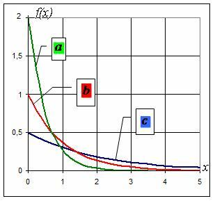
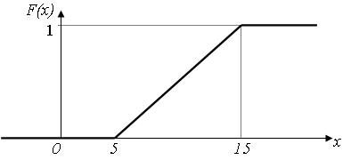
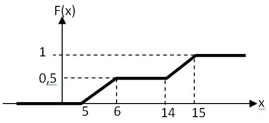
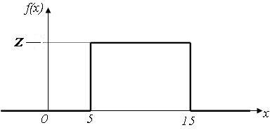
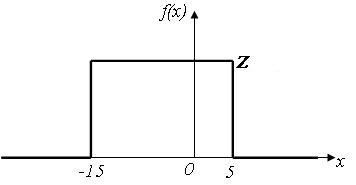
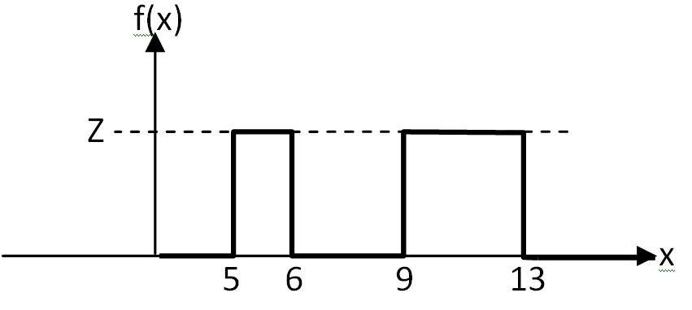
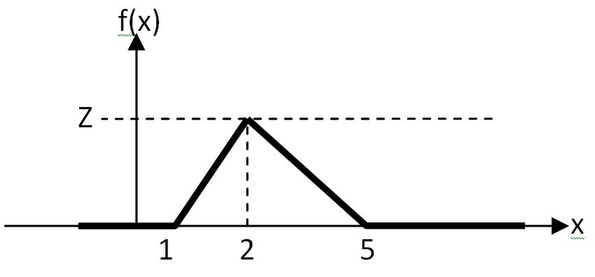
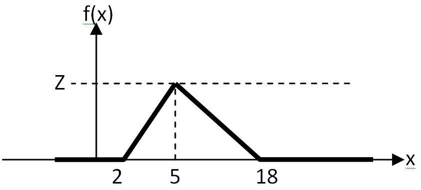
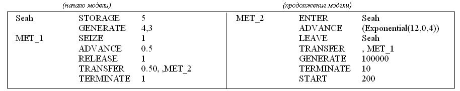

Какие способы принято использовать для описания структуры системы?
аналитический
графический
Замещение одного исходного объекта другим объектом и проведение с ним экспериментов с целью полученияинформации об исходном объекте называется ...
моделированием
Какие модели допускают количественное исследование свойств систем и процессов?
конструктивные
Преимуществом моделирования является то, что оно предоставляет возможность исследования объектов,прямой эксперимент с которыми ...
трудно выполним
экономически невыгоден
невозможен
Совокупность взаимосвязанных элементов, объединенных в одно целое для достижения некоторой цели,называется ...
системой
Минимальный неделимый объект в системе, рассматриваемый как единое целое, называется ...
элементом
Как называется система с большим числом входящих в его состав элементов и связей между ними?
сложной
Как называется совокупность взаимосвязанных систем?
комплекс
С помощью перечня элементов (входящих в состав системы) и перечня связей между ними задается (...)системы?
структура
Способы описания структуры системы.
графический
аналитический
Как называется правило достижения поставленной цели, описывающее поведение системы и направленное на получение результатов, предписанных назначением системы?
функция
Как называется способ описания функции системы в виде последовательностей шагов, которые должнавыполнять система для достижения поставленной цели?
алгоритмический
Как называется способ описания функции системы в виде математических зависимостей в терминахнекоторого математического аппарата?
аналитический
Процесс определения свойств, присущих системе называется...
анализ
К характеристикам системы относятся величины, описывающие её…
стоимость
производительность
надежность
Способы описания функции системы.
аналитический
алгоритмический
графический
табличный
Величины, описывающие первичные свойства системы и являющиеся исходными данными при решении задачанализа называются ...
параметры
Какой метод моделирования является универсальным?
имитационный
Способ достижения поставленной цели за счет выбора определенной структуры и функции системыназывается (...) системы?
организация
Как называется свойство системы, заключающееся в том, что она рассматривается как единое целое,состоящее из взаимодействующих элементов, возможно неоднородных, но одновременно совместимых?
целостность
Какие утверждения являтся неверными?
система есть простая совокупности элементов
расчленяя систему на отдельные части и изучая каждую из них в отдельности, можно познать все свойства
система должна обладать свойством интеграции
система не должна обладать свойством интеграции
Величины, описывающие вторичные свойства системы и определяемые в процессе решения задач анализаназывается ...
характеристики
Какие свойства присущи сложной системе?
интегративность
целостность
связность
организованность
К параметрам системы относятся величины, описывающие …
структуру системы
нагрузку
функциональную организацию системы
Какие величины относятся к внутренним параметрам?
структурные
функциональные
Какие величины относятся к внешним параметрам?
нагрузочные
внешней среды
Какие величины являются глобальными характеристиками технических систем?
производительности
временные
надёжности
стоимостные
Какой метод позволяет выполнять исследование систем на моделях любой степени детализации?
имитационный
Наличие качеств, присущих системе в целом, но не свойственных ни одному из ее элементов в отдельностиназывается ...
интегративностью
Мера одного свойства системы называется...?
показатель эффективности
Степень соответствия системы своему назначению называется ...
эффективность
Степень соответствия системы своему назначению называется ...
эффективностью
Процесс порождения функций и структур, удовлетворяющих требованиям, предъявляемым к эффективностисистемы называется ...
синтез
Процесс порождения функций и структур, удовлетворяющих требованиям, предъявляемым к эффективностисистемы, называется ...
синтезом
Процесс определения свойств, присущих системе, называется ...
анализ
Мера эффективности системы, обобщающая все свойства системы в одной оценке, называется ...
критерий эффективности
Если при увеличении эффективности значение критерия возрастает, то критерий называется ...
прямым
Как называется критерий эффективности, значение которого возрастает при увеличении эффективностисистемы?
прямой
Как называется критерий эффективности, значение которого уменьшается при увеличении эффективностисистемы?
инверсным
Если при увеличении эффективности значение критерия уменьшается, то критерий называется ...
инверсным
Как называется система, которой соответствует максимальное значение прямого критерия эффективности?
оптимальная
Как называется система, которой соответствует минимальное значение инверсного критерия эффективности?
оптимальная
Как называется система, которой соответствует максимальное значение прямого критерия эффективности?
оптимальная
Как называется система, которой соответствует минимальное значение инверсного критерия эффективности?
оптимальная
Процесс, протекающий в системе - это ...
смена состояний системы во времени
Как называется причина, вызывающая переход процесса из состояния в состояние?
событие
Как называются процессы, для которых характерен плавный переход из состояния в состояние?
с непрерывными состояниями
Как называются процессы, для которых характерен плавный переход из состояния в состояние?
непрерывными
Как называются процессы, для которых характерен скачкообразный переход из состояния в состояние?
с дискретными состояниями
Как называются процессы, для которых характерен скачкообразный переход из состояния в состояние?
дискретные
Как называется процесс, поведение которого может быть предсказано заранее?
детерминированный
Как называется процесс, поведение которого невозможно предсказать заранее?
случайный
Как называется режим функционирования системы, при котором характеристики системы не зависят отвремени?
установившийся
Как называется режим функционирования системы, при котором характеристики системы зависят отвремени?
неустановившийся
Чем может быть обусловлен неустановившийся режим функционирования системы?
началом работы системы
нестационарностью параметров системы
перегрузкой системы
С чем связан переходной режим функционирования системы?
с началом работы системы
Как называется режим функционирования, при котором система не справляется с возложенной на неенагрузкой?
режим перегрузок
Какие требования предъявляются к модели?
простота модели
адекватность исследуемой системе
Соответствие модели оригиналу, характеризуемое степенью близости свойств модели свойствам исследуемойсистемы, называется ...
адекватностью
Соответствие модели оригиналу, характеризуемое степенью близости свойств модели свойствам исследуемойсистемы, называется ...
адекватность
От чего зависит адекватность математических моделей?
уровня детализации модели
степени полноты и достоверности сведений об исследуемой системе
Моделирование может проводиться в условиях неопределенности, обусловленных:
неточностью сведений о параметрах
отсутствием сведений о значениях некоторых параметров
Что является синонимом понятия "вероятностная модель"?
стохастическая модель
Что является антонимом понятия "детерминированная модель"?
стохастическая модель
Что является синонимом понятия "содержательная модель"?
концептуальная модель
Что является синонимом понятия "концептуальная модель"?
содержательная модель
Что является синонимом понятия "математическая модель"?
абстрактная модель
Какие модели являются абстрактными?
математические
Что является синонимом понятия "материальная модель"?
физическая модель
Как называется модель, представляющая собой словесное описание только наиболее существенныхособенностей структурно-функциональной организации исследуемой системы?
концептуальная
Как называется модель, эквивалентная или подобная оригиналу или процесс функционирования которой такойже, как у оригинала и имеет ту же или другую физическую природу?
физическая
Установите соответствие моделей:
математическая ::: абстрактная
физическая ::: материальная
концептуальная ::: содержательная
программная ::: компьютерная
Установите соответствие моделей:
абстрактная ::: математическая
компьютерная ::: программная
содержательная ::: концептуальная
материальная ::: физическая
Установление соответствия между значениями системных и модельных параметров и характеристиквыполняется на этапе ...
параметризации
Укажите последовательность решения задач в процессе исследования сложных систем:
Разработка модели ::: 1
Анализ характеристик системы ::: 2
Синтез системы ::: 3
Детальный анализ синтезированной системы ::: 4
Какие методы математического моделирования получили наиболее широкое применение при исследованиитехнических систем с дискретным характером функционирования?
аналитические
численные
имитационные
Основное достоинство имитационного моделирования?
универсальность
Недостатки имитационного моделирования?
трудоемкость процесса моделирования
частный характер результатов
Вам достался счастливый вопрос :)
Чтобы набрать по нему 2 балла, введите без кавычек фразу:"Моделирование - это круто!"
Моделирование - это круто!
Пусть F(x) - функция распределения количества детей в семье. Известно, что F(2) = 0.6.
Что это означает?
С вероятностью 0.6 в семье менее двух детей.
Вероятность того, что в семье более одного ребенка, равна 0.4
Как называются случайные величины, принимающие только отделенные друг от друга значения, которыеможно пронумеровать?
дискретные
Пусть xi - одно из n значений, которые может принимать дискретная случайная величина X, а pi - вероятность того, что Х = xi (при i = 1,2,..n). Укажите, чторассчитвается с помощью формулы:
Математическое ожидание X.
Первый начальный момент X.
Пусть xi - одно из n значений, которые может принимать дискретная случайная величина X, а pi - вероятность того, что Х = xi, и M[X] - мат.ожидание Х (при i = 1,2,..n). Укажите, чторассчитвается с помощью формулы:

Второй центральный момент X.
Дисперсия X.
Как называются случайные величины, которые могут принимать любое значение из некоторого промежутка?
непрерывные
Какие величины являются непрерывными?
время ожидания в очереди
температура воздуха
напряжение в электросети
Какие величины являются дискретными?
число зрителей на стадионе
количество переданных за единицу времени сообщений в компьютерной сети
Всякое соотношение, устанавливающее связь между возможными значениями случайной величины исоответствующими им вероятностями, называется ...
закон распределения
Первый начальный момент случайной величины называется ...
математическим ожиданием
Второй центральный момент случайной величины называется ...
дисперсией
Что характеризует математическое ожидание случайной величины?
среднее значение случайной величины
Что характеризует дисперсия случайной величины?
разброс случайной величины относительно математического ожидания
Что характеризует среднеквадратическое отклонение случайной величины?
разброс случайной величины относительно математического ожидания
Что характеризует коэффициент вариации случайной величины?
разброс случайной величины относительно математического ожидания
Какие из перечисленных законов распределений являются дискретными?
Пуассона
геометрический
Какие из перечисленных законов распределений являются непрерывными?
экспоненциальный
равномерный
гипоэкспоненциальный
гиперэкспоненциальный
Эрланга
Пусть F(x) - функция распределения, а f(x) - плотность распределения непрерывной случайной величины Х. Чемуравнавероятность того, что X попадет в интервал [a; b] ?
Пусть F(x) - функция распределения, а f(x) - плотность распределения непрерывной случайной величины Х. Пустьтакже a < b. Укажите,что можно рассчитать с помощью данной формулы:
P(a < x < b).
Вероятность того, что величина Х попадет в интервал [a; b] .
Функция распределения случайной величины …
неубывающая
Плотность распределения случайной величины ...
может быть как возрастающей функцией, так и убывающей
может принимать любые положительные значения
определяется как производная от функции распределения
Функция распределения случайной величины …
принимает значения в интервале (0, 1)
Укажите формулу преобразования плотности распределения f(x) в функцию распределения F(x) для случайныхвеличин, определённых в области действительных чисел.
Укажите формулу преобразования плотности распределения f(x) в функцию распределения F(x) для случайныхвеличин, определённых в области положительных чисел.
Какими из представленных ниже в виде формул свойствами обладает функция распределения F(x) случайнойвеличины X?
c
d
f
Какими свойствами обладает функция распределения F(x) случайной величины X?
Какими свойствами не обладает функция распределения F(x) случайной величины X?
Пусть случайная величина Х измеряется в метрах. Какие из указанных величин являются безразмерными?
Коэффициент вариации случайной величины Х.
Вероятность того, что случайная величина Х примет значение 5.
Значение функции распределния случайной величины Х в точке 0.
Какую размерность имеет функция распределения случайной величины?
безразмерная
Какую размерность имеет плотность распределения случайной величины?
обратная размерности случайной величины
Какую размерность имеет плотность распределения случайной величины, принимающей значения от 1 до 100секунд?
1/с
Какую размерность имеет функция распределения случайной величины, принимающей значения от 0 до 10метров?
безразмерная
Какую размерность имеет плотность распределения времени обслуживания покупателей в магазине,измеряемого в секундах?
1/с
Какую размерность имеет функция распределения времени обслуживания покупателей в магазине,измеряемого в секундах?
безразмерная
Какую размерность имеет математическое ожидание времени обслуживания покупателей в магазине,измеряемого в секундах?
с
Какую размерность имеет дисперсия времени обслуживания покупателей в магазине,измеряемого в секундах?
с*с
Какую размерность имеет дисперсия случайной величины,измеряемой в секундах?
с^2
Какую размерность имеет среднеквадратическое отклонение времени передачи данных в компьютерной сети,измеряемого в миллисекундах?
мс
Какую размерность имеет математическое ожидание?
размерность случайной величины
Какую размерность имеет дисперсия?
квадрат размерности случайной величины
Какую размерность имеет среднеквадратическое отклонение?
размерность случйной величины
Какую размерность имеет коэффициент вариации?
безразмерная величина
Чему равна дисперсия детерминированной величины X=0,2?
0
Чему равен второй центральный момент детерминированной величины X=0,2?
0
Чему равна дисперсия детерминированной величины X=2?
0
Чему равен второй центральный момент детерминированной величины X=2?
0
Чему равна дисперсия детерминированной величины X=100?
0
Чему равна дисперсия детерминированной величины X=-10?
0
Чему равен коэффициент вариации детерминированной величины X=-10?
0
Чему равно среднеквадратическое отклонение детерминированной величины X=-25?
0
Чему равен второй начальный момент детерминированной величины X=-10?
100
Чему равен второй начальный момент детерминированной величины X=5?
25
Чему равен первый начальный момент детерминированной величины X=5?
5
Чему равен первый начальный момент детерминированной величины X=16?
16
Чему равно математическое ожидание равномерно распределённой в интервале (0; 1) случайной величины?
0.5
Чему равно математическое ожидание равномерно распределённой в интервале (10; 20) случайной величины?
15
Чему равно математическое ожидание равномерно распределённой в интервале (-20; +20) случайной величины?
0
Чему равно математическое ожидание равномерно распределённой в интервале (-20; +30) случайной величины?
5
Чему равно математическое ожидание равномерно распределённой в интервале (-20; +10) случайной величины?
-5
Чему равно математическое ожидание равномерно распределённой в интервале (-100; -10) случайнойвеличины?
-55
Чему равно математическое ожидание равномерно распределённой в интервале (-10; -2) случайной величины?
-6
Чему равно математическое ожидание детерминированной величины X>0, если её второй начальный моментравен 100?
10
Чему равно математическое ожидание детерминированной величины X<0, если её второй начальный моментравен 25?
-5
Чему равно математическое ожидание детерминированной величины X>0, если её второй начальный моментравен 25?
5
Чему равно математическое ожидание детерминированной величины X<0, если её второй начальный моментравен 4?
-2
Чему равно математическое ожидание детерминированной величины X>0, если её второй начальный моментравен 10000?
100
Чему равно математическое ожидание детерминированной величины X<0, если её второй начальный моментравен 10000?
-100
Чему равен второй начальный момент детерминированной величины X=0?
0
Чему равен второй начальный момент детерминированной величины X=6?
36
Чему равен второй начальный момент детерминированной величины X=-6?
36
Чему равен второй начальный момент детерминированной величины X=11?
121
Чему равен второй начальный момент детерминированной величины X=-12?
144
Чему равно математическое ожидание детерминированной величины X>0, если её второй начальный моментравен 4?
2
Чему равен второй начальный момент детерминированной величины X=-7?
49
Чему равен третий начальный момент детерминированной величины X=-2?
-8
Чему равен третий начальный момент детерминированной величины X=-3?
-27
Чему равен третий начальный момент детерминированной величины X=1?
1
Чему равно максимально возможное значение равномерно распределённой случайной величины,определённой в области положительных значений и имеющей математическое ожидание равное 20?
40
Чему равно максимально возможное значение равномерно распределённой случайной величины,определённой в области положительных значений и имеющей математическое ожидание равное 15?
30
Чему равно максимально возможное значение равномерно распределённой случайной величины,определённой в области положительных значений и имеющей математическое ожидание равное 200?
400
Чему равно минимально возможное значение равномерно распределённой случайной величины, определённойв области отрицательных значений и имеющей математическое ожидание равное -20?
-40
Чему равно минимально возможное значение равномерно распределённой случайной величины, определённойв области отрицательных значений и имеющей математическое ожидание равное -200?
-400
Чему равно минимально возможное значение равномерно распределённой случайной величины, определённойв области отрицательных значений и имеющей математическое ожидание равное -0,5?
-1
Чему равно минимально возможное значение равномерно распределённой случайной величины, имеющеймаксимально возможное значение и математическое ожидание -10 и -20 соответственно?
-30
Чему равно минимально возможное значение равномерно распределённой случайной величины, имеющеймаксимально возможное значение и математическое ожидание -1 и -11 соответственно?
-21
Чему равно минимально возможное значение равномерно распределённой случайной величины, имеющеймаксимально возможное значение и математическое ожидание -2 и -5 соответственно?
-8
Чему равно минимально возможное значение равномерно распределённой случайной величины, имеющеймаксимально возможное значение и математическое ожидание -100 и -200 соответственно?
-300
Чему равно минимально возможное значение равномерно распределённой случайной величины, имеющеймаксимально возможное значение и математическое ожидание 20 и 0 соответственно?
-20
Чему равно минимально возможное значение равномерно распределённой случайной величины, имеющеймаксимально возможное значение и математическое ожидание 100 и 40 соответственно?
-20
Чему равно минимально возможное значение равномерно распределённой случайной величины, имеющеймаксимально возможное значение и математическое ожидание 80 и -20 соответственно?
-120
Чему равно минимально возможное значение равномерно распределённой случайной величины, имеющеймаксимально возможное значение и математическое ожидание 10 и -20 соответственно?
-50
Чему равно минимально возможное значение равномерно распределённой случайной величины, имеющеймаксимально возможное значение и математическое ожидание 50 и -25 соответственно?
-100
Чему равно максимально возможное значение равномерно распределённой случайной величины, имеющейминимально возможное значение и математическое ожидание -10 и 20 соответственно?
50
Чему равно максимально возможное значение равномерно распределённой случайной величины, имеющейминимально возможное значение и математическое ожидание -20 и 10 соответственно?
40
Чему равно максимально возможное значение равномерно распределённой случайной величины, имеющейминимально возможное значение и математическое ожидание -100 и -20 соответственно?
60
Чему равно максимально возможное значение равномерно распределённой случайной величины, имеющейминимально возможное значение и математическое ожидание -55 и -5 соответственно?
45
Чему равно максимально возможное значение равномерно распределённой случайной величины, имеющейминимально возможное значение и математическое ожидание -25 и 25 соответственно?
75
Чему равно математическое ожидание экспоненциально распределенной случайной величины, дисперсиякоторой равна 25?
5
Чему равно математическое ожидание экспоненциально распределенной случайной величины, дисперсиякоторой равна 100?
10
Чему равно математическое ожидание экспоненциально распределенной случайной величины, дисперсиякоторой равна 64?
8
Чему равно математическое ожидание экспоненциально распределенной случайной величины, дисперсиякоторой равна 16?
4
Чему равно математическое ожидание экспоненциально распределенной случайной величины,среднеквадратическое отклонение которой равно 16?
16
Чему равно математическое ожидание экспоненциально распределенной случайной величины,среднеквадратическое отклонение которой равно 6?
6
Чему равно математическое ожидание экспоненциально распределенной случайной величины,среднеквадратическое отклонение которой равно 1?
1
Чему равно математическое ожидание экспоненциально распределенной случайной величины,среднеквадратическое отклонение которой равно 100?
100
Чему равно математическое ожидание экспоненциально распределенной случайной величины,среднеквадратическое отклонение которой равно 10000?
10000
Чему равна дисперсия экспоненциально распределенной случайной величины, математическое ожиданиекоторой равно 16?
256
Чему равна дисперсия экспоненциально распределенной случайной величины, математическое ожиданиекоторой равно 1?
1
Чему равна дисперсия экспоненциально распределенной случайной величины, математическое ожиданиекоторой равно 6?
36
Чему равна дисперсия экспоненциально распределенной случайной величины, математическое ожиданиекоторой равно 100?
10000
Чему равна дисперсия экспоненциально распределенной случайной величины, математическое ожиданиекоторой равно 4?
16
Чему равно среднеквадратическое отклонение экспоненциально распределенной случайной величины,математическое ожидание которой равно 100?
100
Чему равно среднеквадратическое отклонение экспоненциально распределенной случайной величины,математическое ожидание которой равно 16?
16
Чему равно среднеквадратическое отклонение экспоненциально распределенной случайной величины,математическое ожидание которой равно 20?
20
Чему равно среднеквадратическое отклонение экспоненциально распределенной случайной величины,математическое ожидание которой равно 121?
121
Чему равно среднеквадратическое отклонение экспоненциально распределенной случайной величины,математическое ожидание которой равно 10000?
10000
Чему равен второй начальный момент экспоненциально распределенной случайной величины,математическое ожидание которой равно 10?
200
Чему равен второй начальный момент экспоненциально распределенной случайной величины,математическое ожидание которой равно 1?
2
Чему равен второй начальный момент экспоненциально распределенной случайной величины,математическое ожидание которой равно 6?
72
Чему равен второй начальный момент экспоненциально распределенной случайной величины,математическое ожидание которой равно 5?
50
Чему равен второй начальный момент экспоненциально распределенной случайной величины,математическое ожидание которой равно 12?
288
Чему равен второй начальный момент экспоненциально распределенной случайной величины,дисперсия которой равна 10?
20
Чему равен второй начальный момент экспоненциально распределенной случайной величины,дисперсия которой равна 100?
200
Чему равен второй начальный момент экспоненциально распределенной случайной величины,дисперсия которой равна 6?
12
Чему равен второй начальный момент экспоненциально распределенной случайной величины,дисперсия которой равна 50?
100
Чему равен второй начальный момент экспоненциально распределенной случайной величины,дисперсия которой равна 36?
72
Чему равен второй начальный момент экспоненциально распределенной случайной величины,среднеквадратическое отклонение которой равно 6?
72
Чему равен второй начальный момент экспоненциально распределенной случайной величины,среднеквадратическое отклонение которой равно 10?
200
Чему равен второй начальный момент экспоненциально распределенной случайной величины,среднеквадратическое отклонение которой равно 1?
2
Чему равен второй начальный момент экспоненциально распределенной случайной величины,среднеквадратическое отклонение которой равно 20?
800
Чему равен второй начальный момент экспоненциально распределенной случайной величины,среднеквадратическое отклонение которой равно 11?
242
В каких интервалах может изменяться равномерно распределённая случайная величина с математическиможиданием равным 50?
0;100
-50; 150
-25; 125
В каких интервалах может изменяться равномерно распределённая случайная величина с математическиможиданием равным 10?
-20; 40
-10; 30
В каких интервалах может изменяться равномерно распределённая случайная величина с математическиможиданием равным -15?
-50; 20
-100; 70
-20; -10
-25; -5
В каких интервалах может изменяться равномерно распределённая случайная величина с математическиможиданием равным -1?
-2; 0
-6; 4
-24; 22
Установите соответствие для равномерно распределённой случайной величины: [математическое ожидание] -( интервал изменения)
[10] ::: (0; 20)
[-10] ::: (-25; 5)
[-5] ::: (-75; 65)
[1] ::: (-8; 10)
[-1] ::: (-8; 6)
Установите соответствие для равномерно распределённой случайной величины: [математическое ожидание] -( интервал изменения)
[0] ::: (-5; 5)
[2] ::: (-4; 8)
[-2] ::: (-5; 1)
[1] ::: (-3; 5)
[-1] ::: (-3; 1)
Установите соответствие для равномерно распределённой случайной величины: [математическое ожидание] -( интервал изменения)
[-12] ::: (-50; 26)
[-11] ::: (-50; 28)
[-10] ::: (-46; 26)
[-13] ::: (-50; 24)
[-14] ::: (-46; 18)
Установите соответствие для равномерно распределённой случайной величины: (интервал изменения) - математическое ожидание
(12; 24) ::: 18
(-12; 24) ::: 6
(-24; 12) ::: -6
(-24; 20) ::: -2
(-24; 0) ::: -12
Установите соответствие для равномерно распределённой случайной величины: (интервал изменения) - математическое ожидание
(-32; 4) ::: -14
(-30; 4) ::: -13
(-32; 8) ::: -12
(-32; 0) ::: -16
(-34; 0) ::: -17
Установите соответствие для равномерно распределённой случайной величины: (интервал изменения) - математическое ожидание
(-45; 5) ::: -20
(-95; 51) ::: -22
(-25; 1) ::: -12
(-95; 63) ::: -16
(-90; 54) ::: -18
Чему равно максимальное значение плотности распределения равномерно распределённой винтервале (0; 10) случайной величины?
0,1
Чему равно максимальное значение плотности распределения равномерно распределённой в интервале (0; 1)случайной величины?
1
Чему равно максимальное значение плотности распределения равномерно распределённой в интервале (-0,5;0,5) случайной величины?
1
Чему равно максимальное значение плотности распределения равномерно распределённой в интервале (-5; 5)случайной величины?
0,1
Чему равно максимальное значение плотности распределения равномерно распределённой в интервале (-5; -4)случайной величины?
1
Чему равно максимальное значение плотности распределения равномерно распределённой в интервале (-10;10) случайной величины?
0,05
Чему равно максимальное значение плотности распределения равномерно распределённой в интервале (-1; 1)случайной величины?
0,5
Чему равно максимальное значение плотности распределения равномерно распределённой в интервале (3; 3,5)случайной величины?
2
Чему равно максимальное значение плотности распределения равномерно распределённой в интервале (-7,5;-7) случайной величины?
2
Чему равно максимальное значение плотности распределения равномерно распределённой в интервале (-7; -5)случайной величины?
0,5
Чему равно максимальное значение плотности распределения равномерно распределённой в интервале (-0,55;-0,5) случайной величины?
20
Чему равно максимальное значение плотности распределения равномерно распределённой в интервале (0,2;0,3) случайной величины?
10
Чему равно максимальное значение плотности распределения равномерно распределённой в интервале (0,6;0,8) случайной величины?
5
Чему равно минимальное значение плотности распределения равномерно распределённой в интервале (0,6;0,8) случайной величины?
0
Чему равно минимальное значение плотности распределения равномерно распределённой в интервале (0,2;0,3) случайной величины?
0
Чему равно значение функции распределения в точке х=0 случайной величины Х, равномерно распределённой винтервале (-6; 6)?
0,5
Чему равно значение функции распределения в точке х=0 случайной величины Х, равномерно распределённой винтервале (-1; 9)?
0.1
Чему равно значение функции распределения в точке х=0 случайной величины Х, равномерно распределённой винтервале (-9; 1)?
0,9
Чему равно значение функции распределения в точке х=0 случайной величины Х, равномерно распределённой винтервале (-3; 2)?
0.6
Чему равно значение функции распределения в точке х=0 случайной величины Х, равномерно распределённой винтервале (-2; 3)?
0,4
Чему равно значение функции распределения в точке х=0 случайной величины Х, равномерно распределённой винтервале (-0,3; 0,7)?
0,3
Чему равно значение функции распределения в точке х=-5 случайной величины Х, равномерно распределённойв интервале (-5; 5)?
0
Чему равно значение функции распределения в точке х=5 случайной величины Х, равномерно распределённойв интервале (-5; 5)?
1
Чему равно значение функции распределения в точке х=-15 случайной величины Х, равномерно распределённойв интервале (-10; 15)?
0
Чему равно значение функции распределения в точке х=15 случайной величины Х, равномерно распределённойв интервале (-15; 10)?
1
Чему равно значение функции распределения в точке х=11 случайной величины Х, равномерно распределённойв интервале (-15; 10)?
1
Чему равно значение функции распределения в точке х=-30 случайной величины Х, равномерно распределённойв интервале (-25; 10)?
0
Чему равно значение функции распределения в точке х=0 случайной величины Х, равномерно распределённойв интервале (5; 10)?
0
Чему равно значение функции распределения в точке х=-4 случайной величины Х, равномерно распределённойв интервале (5; 10)?
0
Чему равно значение функции распределения в точке х=0 случайной величины Х, равномерно распределённойв интервале (-50; -10)?
1
Чему равно значение функции распределения в точке х=100 случайной величины Х, равномернораспределённой в интервале (25; 125)?
0,75
Чему равно значение функции распределения в точке х=-45 случайной величины Х,равномерно распределённойв интервале (-100; 0)?
0,55
Чему равна вероятность того, что случайная величина Х, равномерно распределённаяв интервале (5; 10), примет значение х< 5?
0
Чему равна вероятность того, что случайная величина Х, равномерно распределённаяв интервале (5; 10), примет значение х<20?
1
Чему равна вероятность того, что случайная величина Х, равномерно распределённаяв интервале (0; 10), примет значение х< 5?
0,5
Чему равна вероятность того, что случайная величина Х, равномерно распределённаяв интервале (5; 10), примет значение х<10?
1
Чему равна вероятность того, что случайная величина Х, равномерно распределённаяв интервале (-5; 0), примет значение х<-2?
0,6
Чему равна вероятность того, что случайная величина Х, равномерно распределённаяв интервале (-5; 0), примет значение х<-3?
0,4
Чему равна вероятность того, что случайная величина Х, равномерно распределённаяв интервале (-15; -10), примет значение х<-20?
0
Чему равна вероятность того, что случайная величина Х, равномерно распределённаяв интервале (-15; -10), примет значение х<-12?
0,6
Чему равна вероятность того, что случайная величина Х, равномерно распределённаяв интервале (-15; -5), примет значение х<-2?
1
Чему равна вероятность того, что случайная величина Х, равномерно распределённаяв интервале (-15; -5), примет значение х<-6?
0.9
Чему равен коэффициент вариации экспоненциального распределения?
1
Чему равен коэффициент вариации детерминированной величины?
0
Какие значения может принимать коэффициент вариации экспоненциального распределения?
1
Какие значения может принимать коэффициент вариации детерминированной величины?
0
Какие значения может принимать коэффициент вариации гипоэкспоненциального распределения?
от 0 до 1
Какие значения может принимать коэффициент вариации гиперэкспоненциального распределения?
больше 1
Какие значения может принимать коэффициент вариации распределения Эрланга?
от 0 до 1
Какие значения может принимать коэффициент вариации нормированного распределения Эрланга?
от 0 до 1
Какие значения может принимать коэффициент вариации гиперэрланговского распределения?
любые положительные
Чему равен коэффициент вариации распределения Эрланга 4-го порядка?
0.5
Чему равен коэффициент вариации нормированного распределения Эрланга 4-го порядка?
0,5
Чему равен коэффициент вариации распределения Эрланга 16-го порядка?
0.25
Чему равен коэффициент вариации нормированного распределения Эрланга 16-го порядка?
0,25
Чему равен коэффициент вариации распределения Эрланга 25-го порядка?
0,2
Чему равен коэффициент вариации нормированного распределения Эрланга 25-го порядка?
0,2
Чему равен коэффициент вариации распределения Эрланга 2-го порядка?
0,707
Чему равен коэффициент вариации нормированного распределения Эрланга 2-го порядка?
0,707
Чему равен коэффициент вариации распределения Эрланга 3-го порядка?
0,577
Чему равен коэффициент вариации нормированного распределения Эрланга 3-го порядка?
0,577
К какому распределению стремится распределение Эрланга при увеличении его порядка до бесконечности?
нормальному
К какому распределению стремится нормированное распределение Эрланга при увеличении его порядка добесконечности?
детерминированному
В какое распределение вырождается распределение Эрланга 1-го порядка?
экспоненциальное
В какое распределение вырождается нормированное распределение Эрланга 1-го порядка?
экспоненциальное
Дискретная случайная величина Х принимает значения: 10 или 20, причем первое значение появляется свероятностью 0,2. Чему равно математическое ожидание случайной величины?
18
Дискретная случайная величина Х принимает значения: 10 или 20, причем первое значение появляется свероятностью 0,8. Чему равно математическое ожидание случайной величины?
12
Дискретная случайная величина Х принимает значения: 10 или 20, причем первое значение появляется свероятностью 0,4. Чему равно математическое ожидание случайной величины?
16
Дискретная случайная величина Х принимает значения: 10 или 20, причем первое значение появляется свероятностью 0,6. Чему равно математическое ожидание случайной величины?
14
Дискретная случайная величина Х принимает значения: 10 или 20, причем первое значение появляется свероятностью 0,5. Чему равно математическое ожидание случайной величины?
15
Дискретная случайная величина Х может принимать значения: 100 или 20, причем первое значение появляетсяс вероятностью 0,2. Чему равно математическое ожидание случайной величины?
36
Дискретная случайная величина Х может принимать значения: 100 или 20, причем второе значение появляетсяс вероятностью 0,2. Чему равно математическое ожидание случайной величины?
84
Дискретная случайная величина Х может принимать значения: 100 или 20, причем первое значение появляетсяс вероятностью 0,3. Чему равно математическое ожидание случайной величины?
44
Дискретная случайная величина Х может принимать значения: 100 или 20, причем второе значение появляетсяс вероятностью 0,6. Чему равно математическое ожидание случайной величины?
52
Дискретная случайная величина Х может принимать значения: 100 или 20, причем второе значение появляетсяс вероятностью 0,9. Чему равно математическое ожидание случайной величины?
28
Дискретная случайная величина Х может принимать значения: 100 или 400, причем второе значениепоявляется с вероятностью 0,2. Чему равно математическое ожидание случайной величины?
160
Дискретная случайная величина Х может принимать значения: 100 или 400, причем первое значениепоявляется с вероятностью 0,5. Чему равно математическое ожидание случайной величины?
250
Дискретная случайная величина Х может принимать значения: 200 или 400, причем первое значениепоявляется с вероятностью 0,4. Чему равно математическое ожидание случайной величины?
320
Дискретная случайная величина Х может принимать значения: 200 или 400, причем первое значениепоявляется с вероятностью 0,7. Чему равно математическое ожидание случайной величины?
260
Дискретная случайная величина Х может принимать значения: 200 или 500, причем первое значениепоявляется с вероятностью 0,4. Чему равно математическое ожидание случайной величины?
380
Дискретная случайная величина Х может принимать значения: 200 или 500, причем первое значениепоявляется с вероятностью 0,9. Чему равно математическое ожидание случайной величины?
230
Дискретная случайная величина Х может принимать значения: 200 или 500, причем первое значениепоявляется с вероятностью 0,1. Чему равно математическое ожидание случайной величины?
470
Дискретная случайная величина Х может принимать значения: 10, 20 или 50 с вероятностями 0,7; 0,2 и 0,1соответственно. Чему равно математическое ожидание случайной величины?
16
Дискретная случайная величина Х может принимать значения: 10, 20 или 50 с вероятностями 0,5; 0,4 и 0,1соответственно. Чему равно математическое ожидание случайной величины?
18
Дискретная случайная величина Х может принимать значения: 10, 30 или 50 с вероятностями 0,7; 0,2 и 0,1соответственно. Чему равно математическое ожидание случайной величины?
18
Дискретная случайная величина Х может принимать значения: 10, 30 или 50 с вероятностями 0,5; 0,4 и 0,1соответственно. Чему равно математическое ожидание случайной величины?
22
Дискретная случайная величина Х может принимать значения: 100, 30 или 50 с вероятностями 0,5; 0,4 и 0,1соответственно. Чему равно математическое ожидание случайной величины?
67
Дискретная случайная величина Х может принимать значения: 100, 30 или 50 с вероятностями 0,1; 0,4 и 0,5соответственно. Чему равно математическое ожидание случайной величины?
47
Дискретная случайная величина Х может принимать значения: 90, 30 или 60 с равными вероятностями. Чемуравно математическое ожидание случайной величины?
60
Дискретная случайная величина Х с равными вероятностями может принимать значения: 100, 50 или 60. Чемуравно математическое ожидание случайной величины?
70
Дискретная случайная величина Х с равными вероятностями может принимать значения: 10, 40 или 70. Чемуравно математическое ожидание случайной величины?
40
Дискретная случайная величина Х с равными вероятностями может принимать значения: 1, 4 или 19. Чемуравно математическое ожидание случайной величины?
8
Математическое ожидание и второй начальный момент случайной величины Х соответственно равны 10 и200. Чему равна дисперсия случайной величины?
100
Математическое ожидание и второй начальный момент случайной величины Х соответственно равны 10 и550. Чему равна дисперсия случайной величины?
450
Математическое ожидание и второй начальный момент случайной величины Х соответственно равны 5 и75. Чему равна дисперсия случайной величины?
50
Математическое ожидание и второй начальный момент случайной величины Х соответственно равны 10 и100. Чему равна дисперсия случайной величины?
0
Математическое ожидание и второй начальный момент случайной величины Х соответственно равны 6 и90. Чему равна дисперсия случайной величины?
54
Математическое ожидание и второй начальный момент случайной величины Х соответственно равны 10 и200. Чему равно среднеквадратическое отклонение случайной величины?
10
Математическое ожидание и второй начальный момент случайной величины Х соответственно равны 5 и61. Чему равно среднеквадратическое отклонение случайной величины?
6
Математическое ожидание и второй начальный момент случайной величины Х соответственно равны 4 и80. Чему равно среднеквадратическое отклонение случайной величины?
8
Математическое ожидание и второй начальный момент случайной величины Х соответственно равны 3 и25. Чему равно среднеквадратическое отклонение случайной величины?
4
Математическое ожидание и второй начальный момент случайной величины Х соответственно равны 1 и50. Чему равно среднеквадратическое отклонение случайной величины?
7
Математическое ожидание и второй начальный момент случайной величины Х соответственно равны 5 и50. Чему равен коэффициент вариации случайной величины?
1
Математическое ожидание и второй начальный момент случайной величины Х соответственно равны 5 и125. Чему равен коэффициент вариации случайной величины?
2
Математическое ожидание и второй начальный момент случайной величины Х соответственно равны 5 и250. Чему равен коэффициент вариации случайной величины?
3
Математическое ожидание и второй начальный момент случайной величины Х соответственно равны 2 и68. Чему равен коэффициент вариации случайной величины?
4
Математическое ожидание и второй начальный момент случайной величины Х соответственно равны 2 и104. Чему равен коэффициент вариации случайной величины?
5
Математическое ожидание и второй начальный момент случайной величины Х соответственно равны 1 и101. Чему равен коэффициент вариации случайной величины?
10
Математическое ожидание и второй начальный момент случайной величины Х соответственно равны 4 и160. Чему равен коэффициент вариации случайной величины?
3
Математическое ожидание и второй начальный момент случайной величины Х соответственно равны 3 и153. Чему равен коэффициент вариации случайной величины?
4
Математическое ожидание и второй начальный момент случайной величины Х соответственно равны 4 и160. Чему равен коэффициент вариации случайной величины?
3
Математическое ожидание и второй начальный момент случайной величины Х соответственно равны 10 и500. Чему равен коэффициент вариации случайной величины?
2
Математическое ожидание и дисперсия случайной величины Х соответственно равны 10 и400. Чему равен коэффициент вариации случайной величины?
2
Математическое ожидание и дисперсия случайной величины Х соответственно равны 2 и100. Чему равен коэффициент вариации случайной величины?
5
Математическое ожидание и дисперсия случайной величины Х соответственно равны 2 и36. Чему равен коэффициент вариации случайной величины?
3
Математическое ожидание и дисперсия случайной величины Х соответственно равны 4 и64. Чему равен коэффициент вариации случайной величины?
2
Математическое ожидание и дисперсия случайной величины Х соответственно равны 5 и100. Чему равен коэффициент вариации случайной величины?
2
Математическое ожидание и дисперсия случайной величины Х соответственно равны 4 и256. Чему равен коэффициент вариации случайной величины?
4
Математическое ожидание и дисперсия случайной величины Х соответственно равны 2 и400. Чему равен коэффициент вариации случайной величины?
10
Математическое ожидание и дисперсия случайной величины Х соответственно равны 3 и81. Чему равен коэффициент вариации случайной величины?
3
Математическое ожидание и дисперсия случайной величины Х соответственно равны 3 и144. Чему равен коэффициент вариации случайной величины?
4
Второй начальный момент и дисперсия случайной величины Х соответственно равны 200 и100. Чему равен коэффициент вариации случайной величины?
1
Второй начальный момент и дисперсия случайной величины Х соответственно равны 500 и400. Чему равен коэффициент вариации случайной величины?
2
Второй начальный момент и дисперсия случайной величины Х соответственно равны 1000 и900. Чему равен коэффициент вариации случайной величины?
3
Второй начальный момент и дисперсия случайной величины Х соответственно равны 68 и64. Чему равен коэффициент вариации случайной величины?
4
Второй начальный момент и дисперсия случайной величины Х соответственно равны 40 и36. Чему равен коэффициент вариации случайной величины?
3
Второй начальный момент и дисперсия случайной величины Х соответственно равны 104 и100. Чему равен коэффициент вариации случайной величины?
5
Второй начальный момент и дисперсия случайной величины Х соответственно равны 360 и324. Чему равен коэффициент вариации случайной величины?
3
Второй начальный момент и дисперсия случайной величины Х соответственно равны 45 и36. Чему равен коэффициент вариации случайной величины?
2
Второй начальный момент и дисперсия случайной величины Х соответственно равны 234 и225. Чему равен коэффициент вариации случайной величины?
5
Второй начальный момент и дисперсия случайной величины Х соответственно равны 160 и144. Чему равен коэффициент вариации случайной величины?
3
Второй начальный момент и дисперсия случайной величины Х соответственно равны 125 и100. Чему равен коэффициент вариации случайной величины?
2
Второй начальный момент и дисперсия случайной величины Х ссоответственно равны 200 и100. Чему равно математическое ожидание случайной величины?
10
Второй начальный момент и дисперсия случайной величины Х ссоответственно равны 40 и36. Чему равно математическое ожидание случайной величины?
2
Второй начальный момент и дисперсия случайной величины Х ссоответственно равны 180 и144. Чему равно математическое ожидание случайной величины?
6
Второй начальный момент и дисперсия случайной величины Х ссоответственно равны 425 и400. Чему равно математическое ожидание случайной величины?
5
Второй начальный момент и дисперсия случайной величины Х ссоответственно равны 320 и256. Чему равно математическое ожидание случайной величины?
8
Дисперсия и второй начальный момент случайной величины Х ссоответственно равны 324 и405. Чему равно математическое ожидание случайной величины?
9
Дисперсия и второй начальный момент случайной величины Х ссоответственно равны 441 и450. Чему равно математическое ожидание случайной величины?
3
Дисперсия и второй начальный момент случайной величины Х ссоответственно равны 144 и180. Чему равно математическое ожидание случайной величины?
6
Дисперсия и второй начальный момент случайной величины Х ссоответственно равны 144 и160. Чему равно математическое ожидание случайной величины?
4
Дисперсия и второй начальный момент случайной величины Х ссоответственно равны 625 и650. Чему равно математическое ожидание случайной величины?
5
Дискретная случайная величина с равной вероятностью принимает целочисленные значения от -4 до 5(включительно). Чему равна вероятность того, что случайная величина примет значение больше 1?
0,4
Дискретная случайная величина с равной вероятностью принимает целочисленные значения от 1 до 10. Чемуравна вероятность того, что случайная величина примет значение больше 8?
0,2
Дискретная случайная величина с равной вероятностью принимает целочисленные значения от 22 до 31(включительно). Чему равна вероятность того, что случайная величина примет значение больше 22?
0.9
Дискретная случайная величина с равной вероятностью принимает целочисленные значения от 10 до 19(включительно). Чему равна вероятность того, что случайная величина примет значение больше 13?
0.6
Дискретная случайная величина с равной вероятностью принимает целочисленные значения от -17 до -8(включительно). Чему равна вероятность того, что случайная величина примет значение большее или равное-11?
0.4
Дискретная случайная величина с равной вероятностью принимает целочисленные значения от 0 до 4(включительно). Чему равна вероятность того, что случайная величина примет значение большее или равное 3?
0.4
Дискретная случайная величина Х с равной вероятностью принимает целочисленные значения на отрезке [-5.5;-0.7]. Чему равна вероятность того, что случайная величина примет значение х>-4?
0.6
Дискретная случайная величина Х с равной вероятностью принимает целочисленные значения на отрезке [-5.5;-0.7]. Чему равна вероятность того, что случайная величина примет значение х>-2?
0.2
Дискретная случайная величина Х с равной вероятностью принимает целочисленные значения на отрезке [-5.5;-0.7]. Чему равна вероятность того, что случайная величина примет значение х<-4?
0.2
Среднеквадратическое отклонение и коэффициент вариации случайной величины Х ссоответственно равны 10и 1. Чему равен второй начальный момент случайной величины?
200
Среднеквадратическое отклонение и коэффициент вариации случайной величины Х ссоответственно равны 20и 2. Чему равен второй начальный момент случайной величины?
500
Среднеквадратическое отклонение и коэффициент вариации случайной величины Х ссоответственно равны 30и 3. Чему равен второй начальный момент случайной величины?
1000
Среднеквадратическое отклонение и коэффициент вариации случайной величины Х ссоответственно равны 10и 5. Чему равен второй начальный момент случайной величины?
104
Среднеквадратическое отклонение и коэффициент вариации случайной величины Х ссоответственно равны 6и 3. Чему равен второй начальный момент случайной величины?
40
Среднеквадратическое отклонение и коэффициент вариации случайной величины Х ссоответственно равны 18и 2. Чему равен второй начальный момент случайной величины?
405
Среднеквадратическое отклонение и коэффициент вариации случайной величины Х ссоответственно равны 12и 2. Чему равен второй начальный момент случайной величины?
180
Среднеквадратическое отклонение и коэффициент вариации случайной величины Х ссоответственно равны 21и 7. Чему равен второй начальный момент случайной величины?
450
Среднеквадратическое отклонение и коэффициент вариации случайной величины Х ссоответственно равны 12и 3. Чему равен второй начальный момент случайной величины?
160
Среднеквадратическое отклонение и коэффициент вариации случайной величины Х ссоответственно равны 25и 5. Чему равен второй начальный момент случайной величины?
650
Каким из перечисленных распределений следует аппроксимировать полученное экспериментальным путёмреальное распределение, первый и второй начальные моменты которого соответственно равны 5 и 25?
детерминированным
Каким из перечисленных распределений следует аппроксимировать полученное экспериментальным путёмреальное распределение, первый и второй начальные моменты которого соответственно равны 10 и 100?
детерминированным
Каким из перечисленных распределений следует аппроксимировать полученное экспериментальным путёмреальное распределение, первый и второй начальные моменты которого соответственно равны 10 и 200?
экспоненциальным
Каким из перечисленных распределений следует аппроксимировать полученное экспериментальным путёмреальное распределение, первый и второй начальные моменты которого соответственно равны 4 и 32?
экспоненциальным
Каким из перечисленных распределений следует аппроксимировать полученное экспериментальным путёмреальное распределение, первый и второй начальные моменты которого соответственно равны 4 и 20?
Эрланга 4-го порядка
Каким из перечисленных распределений следует аппроксимировать полученное экспериментальным путёмреальное распределение, первый и второй начальные моменты которого соответственно равны 2 и 5?
Эрланга 4-го порядка
Каким из перечисленных распределений следует аппроксимировать полученное экспериментальным путёмреальное распределение, первый и второй начальные моменты которого соответственно равны 4 и 24?
Эрланга 2-го порядка
Каким из перечисленных распределений следует аппроксимировать полученноеэкспериментальным путёмреальное распределение, первый и второй начальные моменты которогосоответственноравны 6 и 40?
Эрланга 9-го порядка
Каким из перечисленных распределений следует аппроксимировать полученное экспериментальным путёмреальное распределение, первый и второй начальные моменты которого соответственно равны 2 и 4,25?
Эрланга 16-го порядка
Каким из перечисленных распределений следует аппроксимировать полученное экспериментальным путёмреальное распределение, первый и второй начальные моменты которого соответственно равны 5 и 125?
гиперэкспоненциальным
Каким из перечисленных распределений следует аппроксимировать полученное экспериментальным путёмреальное распределение, первый и второй начальные моменты которого соответственно равны 10 и 500?
гиперэкспоненциальным
Каким из перечисленных распределений следует аппроксимировать полученное экспериментальным путёмреальное распределение, первый начальный и второй центральный моменты которого соответственно равны10 и 0?
детерминированным
Каким из перечисленных распределений следует аппроксимировать полученное экспериментальным путёмреальное распределение, первый начальный и второй центральный моменты которого соответственно равны10 и 100?
экспоненциальным
Каким из перечисленных распределений следует аппроксимировать полученное экспериментальным путёмреальное распределение, первый начальный и второй центральный моменты которого соответственно равны4 и 16?
экспоненциальным
Каким из перечисленных распределений следует аппроксимировать полученное экспериментальным путёмреальное распределение, первый начальный и второй центральный моменты которого соответственно равны4 и 64?
гиперэкспоненциальным
Каким из перечисленных распределений следует аппроксимировать полученное экспериментальным путёмреальное распределение, первый начальный и второй центральный моменты которого соответственно равны5 и 49?
гиперэкспоненциальным
Каким из перечисленных распределений следует аппроксимировать полученное экспериментальным путёмреальное распределение, первый начальный и второй центральный моменты которого соответственно равны2 и 1?
Эрланга 4-го порядка
Каким из перечисленных распределений следует аппроксимировать полученное экспериментальным путёмреальное распределение, первый начальный и второй центральный моменты которого соответственно равны2 и 0,25?
Эрланга 16-го порядка
Каким из перечисленных распределений следует аппроксимировать полученное экспериментальным путёмреальное распределение, первый начальный и второй центральный моменты которого соответственно равны10 и 4?
Эрланга 25-го порядка
Каким из перечисленных распределений следует аппроксимировать полученное экспериментальным путёмреальное распределение, первый начальный и второй центральный моменты которого соответственно равны30 и 36?
Эрланга 25-го порядка
Чему равно математическое ожидание случайной величина Х, распределённой по экспоненциальному закону(а)?

0.5
Чему равно математическое ожидание случайной величина Х, распределённой по экспоненциальному закону(b)?
1
Чему равно математическое ожидание случайной величина Х, распределённой по экспоненциальному закону(c)?
2
Какое экспоненциальное распределение (a, b или с) описывает случайную величину с наибольшимматематическим ожиданием?
c
Какое экспоненциальное распределение (a, b или с) описывает случайную величину с наименьшимматематическим ожиданием?
а
Какое экспоненциальное распределение (a, b или с) описывает случайную величину с наибольшейдисперсией?
с
Какое экспоненциальное распределение (a, b или с) описывает случайную величину с наименьшейдисперсией?
a
На каком рисунке (а, б, в или г) показана функция распределения случайной величины?
а
На каком рисунке (а, б, в или г) показана функция плотности распределения случайной величины?
б
На каком рисунке (а, б, в или г) показана гистограмма функции распределения случайной величины?
в
На каком рисунке (а, б, в или г) показана гистограмма плотности распределения случайной величины?
г
Случайная величина с функцией распределения, приведенной на рисунке, имеет (...) закон распределения.Вставьте пропущенное слово.

равномерный
Чему равно математическое ожидание случайной величины, имеющей распределение, показанное на рисунке?
3
Чему равно математическое ожидание случайной величины, имеющей распределение, показанное на рисунке?

10
Чему равно математическое ожидание случайной величины, имеющей распределение, показанное нарисунке?
10
Чему равно математическое ожидание случайной величины, имеющей распределение, показанное нарисунке?
5
Чему равно математическое ожидание случайной величины, имеющей распределение, показанное нарисунке?
-6
Чему равна вероятность того, что случайная величина, имеющая распределение, показанное нарисунке, будет меньше 10?
0,5
Чему равна вероятность того, что случайная величина, имеющая распределение, показанное нарисунке, будет меньше 0?
0,25
Чему равна вероятность того, что случайная величина, имеющая распределение, показанное нарисунке, будет меньше 0?
1
Чему равна вероятность того, что случайная величина, имеющая распределение, показанное нарисунке, будет меньше 14?
0,9
Чему равна вероятность того, что случайная величина, имеющая распределение, показанное нарисунке, будет меньше -3?
0,1
Чему равна вероятность того, что случайная величина, имеющая распределение, показанное нарисунке, будет меньше -4?
0,75
Чему равна вероятность того, что случайная величина, имеющая распределение, показанное нарисунке, будет меньше 7?
0,2
Чему равна вероятность того, что случайная величина, имеющая распределение, показанное нарисунке, будет больше или равна 7?
0,8
Чему равна вероятность того, что случайная величина, имеющая распределение, показанное нарисунке, будет больше или равна 12?
0,3
Чему равна вероятность того, что случайная величина, имеющая распределение, показанное нарисунке, будет больше или равна 11?
0,4
Чему равна вероятность того, что случайная величина, имеющая распределение, показанное нарисунке, будет больше или равна 11?
0,2
Чему равна вероятность того, что случайная величина, имеющая распределение, показанное нарисунке, будет больше или равна -11?
1
Чему равна вероятность того, что случайная величина, имеющая распределение, показанное нарисунке, будет больше или равна -11?
1
Чему равна вероятность того, что случайная величина, имеющая распределение, показанное нарисунке, будет больше или равна -2?
1
Чему равно значение Z плотности равномерного распределения, показанного на рисунке?

0,1
Чему равно значение Z плотности равномерного распределения, показанного на рисунке?

0,05
Чему равно значение Z плотности равномерного распределения, показанного на рисунке?

0,01
Чему равно значение Z плотности распределения, показанного на рисунке?
0,5
Чему равно значение Z плотности распределения, показанного на рисунке?
0,25
Чему равно значение Z плотности распределения, показанного на рисунке?
0,25
Чему равно значение Z плотности распределения, показанного на рисунке?
0,5
Чему равно значение Z плотности распределения, показанного на рисунке?
0,2
Чему равно значение Z плотности распределения, показанного на рисунке?

0,2
Чему равно значение Z плотности распределения, показанного на рисунке?

0,5
Чему равно значение Z плотности распределения, показанного на рисунке?

0,125
Чему равно математическое ожидание равномерного распределения, плотность которого показана нарисунке?
10
Чему равно математическое ожидание равномерного распределения, плотность которого показана нарисунке?
-5
Чему равно математическое ожидание равномерного распределения, плотность которого показана нарисунке?
-100
Чему равно математическое ожидание распределения, плотность которого показана нарисунке?
3
Чему равно математическое ожидание распределения, плотность которого показана нарисунке?
5
Чему равна вероятность того, что случайная величина, имеющая плотность распределения, показанную нарисунке, будет больше или равна 12?
0,3
Чему равна вероятность того, что случайная величина, имеющая плотность распределения, показанную нарисунке, будет больше или равна -3?
0,4
Чему равна вероятность того, что случайная величина, имеющая плотность распределения, показанную нарисунке, будет больше или равна -160?
1
Чему равна вероятность того, что случайная величина, имеющая плотность распределения, показанную нарисунке, будет меньше 12?
0,7
Чему равна вероятность того, что случайная величина, имеющая плотность распределения, показанную нарисунке, будет меньше -15?
0
Чему равна вероятность того, что случайная величина, имеющая плотность распределения, показанную нарисунке, будет меньше 0?
1
Чему равна вероятность того, что случайная величина, имеющая плотность распределения, показанную нарисунке, будет меньше 2?
0,5
Чему равна вероятность того, что случайная величина, имеющая плотность распределения, показанную нарисунке, будет меньше 4.5?
0,75
Чему равна вероятность того, что случайная величина, имеющая плотность распределения, показанную нарисунке, будет больше 7?
0,25
Чему равна вероятность того, что случайная величина, имеющая плотность распределения, показанную нарисунке, будет больше 4?
0,5
Чему равна вероятность того, что случайная величина, имеющая плотность распределения, показанную нарисунке, будет больше 4?
0,5
Чему равна вероятность того, что случайная величина, имеющая плотность распределения, показанную нарисунке, будет меньше 5.5?
0,6
Чему равна вероятность того, что случайная величина, имеющая плотность распределения, показанную нарисунке, будет больше 6.3?
0,4
Чему равна вероятность того, что случайная величина, имеющая плотность распределения, показанную нарисунке, будет больше 12?
0,2
Чему равна вероятность того, что случайная величина, имеющая плотность распределения, показанную нарисунке, будет меньше 10?
0,4
Чему равно значение функции распределения F(9) случайной величины, плотность распределения которойпоказана на рисунке?
0,4
Чему равно значение функции распределения F(0) случайной величины, плотность распределения которойпоказана на рисунке?
0,75
Чему равно значение функции распределения F(0) случайной величины, плотность распределения которойпоказана на рисунке?
1
Чему равно значение функции распределения F(1.5) случайной величины, плотность распределения которойпоказана на рисунке?
0,25
Чему равно значение функции распределения F(3.8) случайной величины, плотность распределения которойпоказана на рисунке?
0,5
Чему равно значение функции распределения F(7) случайной величины, плотность распределения которойпоказана на рисунке?
0,75
Чему равно значение функции распределения F(3) случайной величины, плотность распределения которойпоказана на рисунке?
0,4
Чему равно значение функции распределения F(6) случайной величины, плотность распределения которойпоказана на рисунке?
0,6
Чему равно значение функции распределения F(5.5) случайной величины, плотность распределения которойпоказана на рисунке?
0,1
Чему равно значение функции распределения F(12.5) случайной величины, плотность распределения которойпоказана на рисунке?
0,9
Вам достался счастливый вопрос :)Он появляется в тесте с вероятностью около 3%.
Чтобы набрать 5 баллов, введите без кавычек фразу:"Моделирование - это круто!"
Моделирование - это круто!
Какое экспоненциальное распределение (a, b или с) описывает случайную величину с наименьшимкоэффициентом вариации?
коэффициенты вариации во всех случаях имеют одинаковое значение
Какое экспоненциальное распределение (a, b или с) описывает случайную величину с наибольшимкоэффициентом вариации?
коэффициенты вариации во всех случаях имеют одинаковое значение
Чему равна дисперсия случайной величина Х, распределённой по экспоненциальному закону(а)?
0.25
Чему равна дисперсия случайной величина Х, распределённой по экспоненциальному закону(b)?
1
Чему равна дисперсия случайной величина Х, распределённой по экспоненциальному закону(c)?
4
Чему равна вероятность того, что случайная величина, имеющая распределение, показанное нарисунке, будет больше или равна 14.7?
0.15
Чему равна вероятность того, что случайная величина, имеющая распределение, показанное нарисунке, будет меньше или равна 4.4?
0.7
Как называется процесс, который развивается в зависимости от ряда случайных факторов?
случайный
Какие понятия присущи любому случайному процессу?
состояние
переходы между состояниями
Как называется граф, в котором вершины соответствуют состояниям, а ориентированные дуги - переходам изодного состояния в другое?
граф переходов
Как называется граф переходов, если на дугах графа указаны условия перехода в виде вероятностей илиинтенсивностей переходов?
размеченый
Что указывается на дугах размеченного графа переходов?
вероятности переходов
интенсивности переходов
Как называются состояния случайного процесса, если процесс после какого-то числа переходов непременнопокидает их?
невозвратные
Как называются состояния случайного процесса, если процесс, достигнув этих состояний прекращается?
поглощающими
Как называется случайный процесс, в котором из любого состояния можно перейти за то или иное число шаговв любое другое состояние и вернуться в исходное?
транзитивным
Как называется случайный процесс, в котором переход из одного состояния в другое происходитскачком?
Процесс с дискретными состояниями
Как называется случайный процесс, для которого характерен плавный переход из одного состояния в другое?
Процесс с непрерывными состояниями
Как называется дискретный случайный процесс, в котором переход из одного состояния в другое происходит взаранее известные моменты времени?
с дискретным временем
Как называется дискретный случайный процесс, в котором переход из одного состояния в другое происходит взаранее неизвестные моменты времени?
с непрерывным временем
Как называется дискретный случайный процесс, в котором переход из одного состояния в другое происходит вслучайные моменты времени?
с непрерывным временем
Как называется процесс, у которого вероятность состояния в будущем зависит только от состояния внастоящем и не зависит от того, когда и каким образом процесс попал в это состояние?
марковский
По какому закону должны быть распределены интервалы времени между соседними переходами из состоянияв состояние для того, чтобы случайный процесс с непрерывным временем был марковским?
экспоненциальному
Как называется процесс, в котором переход из одного состояния в другое зависит только от состояния, вкотором находится процесс?
марковский
Какие параметры используются для описания марковского случайного процесса с дискретным временем?
перечень состояний, в которых может находиться система
матрица вероятностей переходов
начальные вероятности состояний
Какие параметры используются для описания марковского случайного процесса с непрерывным временем?
перечень состояний
матрица интенсивностей переходов
начальные вероятности состояний
Как для случайного процесса с непрерывным временем называется предел отношения вероятности переходаза бесконечно малый промежуток времени к длине этого промежутка?
интенсивность перехода
Что представляет собой нормировочное условие для марковского случайного процесса?
сумма вероятностей состояний равна 1
Какие процессы называют стохастическими последовательностями?
процессы с дискретным временем
Какие процессы называют случайными цепями?
с дискретным временем
Что является основной характеристикой марковского случайного процесса?
вектор состояний
Какими из перечисленных свойств обладает эргодический процесс?
транзитивность
отсутствие невозвратных и поглощающих состояний
по истечении большого промежутка времени вероятности состояний стремятся к предельным значениям
Какой является матрица интенсивностей переходов случайного процесса?
дифференциальной
Какой является матрица вероятностей переходов случайного процесса?
стохастической
Параметром какого распределения является интенсивность перехода марковского процесса?
экспоненциального
Как называется марковский процесс, если интенсивности переходов постоянны и не зависят от времени?
однородным
Чему равна сумма вероятностей переходов случайного процесса в пределах одной строки матрицы переходов?
1
Чему равна сумма интенсивностей переходов случайного процесса в пределах одной строки матрицыпереходов?
0
Из какого условия определяются диагональные элементы матрицы интенсивностей переходов случайногопроцесса?
сумма элементов строки должна быть равна 0
Если по истечении достаточно большого промежутка времени вероятности состояний стремятся к предельнымзначениям, не зависящим от начальных вероятностей и от самого промежутка времени, то говорят, чтослучайный процесс обладает ...
эргодическим свойством
Если случайный процесс обладает эргодическим свойством, то соответствующая система работает ...
в установивишемся режиме
Определить, обладает ли эргодическим свойством случайный процесс с дискретным временем со следующейматрицей вероятностей переходов.
да
Определить, обладает ли эргодическим свойством случайный процесс с дискретным временем со следующейматрицей вероятностей переходов.
нет
Случайный процесс с непрерывным временем имеет два состояния. Интенсивность перехода из 1-го состоянияво 2-е равна 12 1/с. Чему равна вероятность перехода из 1-го состояния во 2-е в момент времени 5 с (считаяот начала наблюдения)?
0
Как называется матрица вероятностей переходов, представленная на рисунке, в которой A, C и D - ненулевыеподматрицы; 0 - нулеваяподматрица?
разложимая
Как называется матрица вероятностей переходов, представленная на рисунке, в которой A, B и D - ненулевыеподматрицы; 0 - нулевая подматрица?
разложимая
Как называется матрица вероятностей переходов, представленная на рисунке, в которой B и C - ненулевыеподматрицы; 0 - нулевая подматрица?
периодическая
Чему равен элемент A в матрице интенсивностей переходов?
-0,5
Чему равен элемент A в матрице вероятностей переходов?
0,5
Определить коэффициент загрузки СМО типа М/М/1/0, матрица интенсивностей переходов которойпредставлена на рисунке (состояние 0 - в СМО нет заявок, состояние 1 - в СМО одна заявка):
0,75
Определить коэффициент простоя СМО типа М/М/1/0, матрица интенсивностей переходов которойпредставленана рисунке (состояние 0 - в СМО нет заявок, состояние 1 - в СМО одна заявка):
0,25
Определить вероятность потери заявок в СМО типа М/М/1/0, матрица интенсивностей переходов которойпредставленана рисунке (состояние 0 - в СМО нет заявок, состояние 1 - в СМО одна заявка):
0,75
Определить вероятность попадания на обслуживание заявки в СМО типа М/М/1/0 , матрица интенсивностейпереходов которой представлена на рисунке (состояние 0 - в СМО нет заявок, состояние 1 - в СМО одназаявка):
0,25
Определить среднее число заявок в СМО типа М/М/1/0, матрица интенсивностей переходов которойпредставленана рисунке (состояние 0 - в СМО нет заявок, состояние 1 - в СМО одна заявка):
0,75
Определить нагрузку СМО типа М/М/1/0, матрица интенсивностей переходов которой представленана рисунке (состояние 0 - в СМО нет заявок, состояние 1 - в СМО одна заявка):
3
Определить среднее число обслуживаемых заявок в СМО типа М/М/1/0, матрица интенсивностей переходовкоторой представленана рисунке (состояние 0 - в СМО нет заявок, состояние 1 - в СМО одна заявка):
0,75
Определить вероятность простоя обслуживающего прибора в СМО типа М/М/1/0, матрица интенсивностейпереходов которой представленана рисунке (состояние 0 - в СМО нет заявок, состояние 1 - в СМО одна заявка):
0,25
Определить нагрузку СМО типа М/М/2/0, матрица интенсивностейпереходов которой представленана рисунке (состояние 0 - в СМО нет заявок, состояние 1 - в СМО одна заявка, состояние 2 - в СМО двезаявки):
2
Определить загрузку СМО типа М/М/2/0, матрица интенсивностейпереходов которой представленана рисунке (состояние 0 - в СМО нет заявок, состояние 1 - в СМО одна заявка, состояние 2 - в СМО две заявки):
0,6
Определить коэффициент простоя СМО типа М/М/2/0, матрица интенсивностейпереходов которой представленана рисунке (состояние 0 - в СМО нет заявок, состояние 1 - в СМО одна заявка, состояние 2 - в СМО две заявки):
0,4
Определить среднее число работающих приборов в СМО типа М/М/2/0, матрица интенсивностейпереходов которой представленана рисунке (состояние 0 - в СМО нет заявок, состояние 1 - в СМО одна заявка, состояние 2 - в СМО две заявки):
1,2
Определить среднее число простаивающих приборов в СМО типа М/М/2/0, матрица интенсивностейпереходов которой представлена на рисунке (состояние 0 - в СМО нет заявок, состояние 1 - в СМО одна заявка, состояние 2 - в СМО две заявки):
0,8
Определить среднее число заявок в СМО типа М/М/2/0, матрица интенсивностейпереходов которой представленана рисунке (состояние 0 - в СМО нет заявок, состояние 1 - в СМО одна заявка, состояние 2 - в СМО две заявки):
1,2
Определить вероятность отказа в обслуживании заявок в СМО типа М/М/2/0, матрица интенсивностейпереходов которой представленана рисунке (состояние 0 - в СМО нет заявок, состояние 1 - в СМО одна заявка, состояние 2 - в СМО две заявки):
0,4
Определить вероятность принятия заявки на обслуживание в СМО типа М/М/2/0, матрица интенсивностейпереходов которой представленана рисунке (состояние 0 - в СМО нет заявок, состояние 1 - в СМО одна заявка, состояние 2 - в СМО две заявки):
0,6
Определить производительность СМО типа М/М/2/0, матрица интенсивностейпереходов которой представленана рисунке (состояние 0 - в СМО нет заявок, состояние 1 - в СМО одна заявка, состояние 2 - в СМО две заявки):
0,24
Определить интенсивность потока потерянных заявок в СМО типа М/М/2/0, матрица интенсивностейпереходов которой представленана рисунке (состояние 0 - в СМО нет заявок, состояние 1 - в СМО одна заявка, состояние 2 - в СМО две заявки):
0,16
Определить среднее время пребывания заявок в СМО типа М/М/2/0, матрица интенсивностейпереходов которой представленана рисунке (состояние 0 - в СМО нет заявок, состояние 1 - в СМО одна заявка, состояние 2 - в СМО две заявки):
5
Определить нагрузку СМО типа М/М/2/0, матрица интенсивностейпереходов которой представленана рисунке (состояние 0 - в СМО нет заявок, состояние 1 - в СМО одна заявка, состояние 2 - в СМО двезаявки):
2
Определить загрузку СМО типа М/М/2/0, матрица интенсивностейпереходов которой представленана рисунке (состояние 0 - в СМО нет заявок, состояние 1 - в СМО одна заявка, состояние 2 - в СМО две заявки):
0,6
Определить коэффициент простоя СМО типа М/М/2/0, матрица интенсивностейпереходов которой представленана рисунке (состояние 0 - в СМО нет заявок, состояние 1 - в СМО одна заявка, состояние 2 - в СМО две заявки):
0,4
Определить среднее число работающих приборов в СМО типа М/М/2/0, матрица интенсивностейпереходов которой представленана рисунке (состояние 0 - в СМО нет заявок, состояние 1 - в СМО одна заявка, состояние 2 - в СМО две заявки):
1,2
Определить среднее число простаивающих приборов в СМО типа М/М/2/0, матрица интенсивностейпереходов которой представлена на рисунке (состояние 0 - в СМО нет заявок, состояние 1 - в СМО одна заявка, состояние 2 - в СМО две заявки):
0,8
Определить среднее число заявок в СМО типа М/М/2/0, матрица интенсивностейпереходов которой представленана рисунке (состояние 0 - в СМО нет заявок, состояние 1 - в СМО одна заявка, состояние 2 - в СМО две заявки):
1,2
Определить вероятность отказа в обслуживании заявок в СМО типа М/М/2/0, матрица интенсивностейпереходов которой представленана рисунке (состояние 0 - в СМО нет заявок, состояние 1 - в СМО одна заявка, состояние 2 - в СМО две заявки):
0,4
Определить вероятность принятия заявки на обслуживание в СМО типа М/М/2/0, матрица интенсивностейпереходов которой представленана рисунке (состояние 0 - в СМО нет заявок, состояние 1 - в СМО одна заявка, состояние 2 - в СМО две заявки):
0,6
Определить производительность СМО типа М/М/2/0, матрица интенсивностейпереходов которой представленана рисунке (состояние 0 - в СМО нет заявок, состояние 1 - в СМО одна заявка, состояние 2 - в СМО две заявки):
0,24
Определить интенсивность потока потерянных заявок в СМО типа М/М/2/0, матрица интенсивностейпереходов которой представленана рисунке (состояние 0 - в СМО нет заявок, состояние 1 - в СМО одна заявка, состояние 2 - в СМО две заявки):
0,16
Определить среднее время пребывания заявок в СМО типа М/М/2/0, матрица интенсивностейпереходов которой представленана рисунке (состояние 0 - в СМО нет заявок, состояние 1 - в СМО одна заявка, состояние 2 - в СМО две заявки):
5
Определить нагрузку СМО типа М/М/1/2, матрица интенсивностейпереходов которой представленана рисунке (номер состояния равен количеству заявок в СМО):
1
Определить загрузку СМО типа М/М/1/2, матрица интенсивностейпереходов которой представленана рисунке (номер состояния равен количеству заявок в СМО):
0,75
Определить коэффициент простоя СМО типа М/М/1/2, матрица интенсивностейпереходов которой представленана рисунке (номер состояния равен количеству заявок в СМО):
0,25
Определить среднюю длину очереди в СМО типа М/М/1/2, матрица интенсивностейпереходов которой представленана рисунке (номер состояния равен количеству заявок в СМО):
0,75
Определить среднее число заявок в СМО типа М/М/1/2, матрица интенсивностейпереходов которой представленана рисунке (номер состояния равен количеству заявок в СМО):
1,5
Определить вероятность потери заявок в СМО типа М/М/1/2, матрица интенсивностейпереходов которой представленана рисунке (номер состояния равен количеству заявок в СМО):
0,25
Определить вероятность попадания заявок в СМО типа М/М/1/2, матрица интенсивностейпереходов которой представленана рисунке (номер состояния равен количеству заявок в СМО):
0,75
Определить производительность СМО типа М/М/1/2, матрица интенсивностейпереходов которой представленана рисунке (номер состояния равен количеству заявок в СМО):
0,15
Определить интенсивность потока потерянных заявок в СМО типа М/М/1/2, матрица интенсивностейпереходов которой представленана рисунке (номер состояния равен количеству заявок в СМО):
0,05
Определить среднее время ожидания заявок в СМО типа М/М/1/2, матрица интенсивностейпереходов которой представленана рисунке (номер состояния равен количеству заявок в СМО):
5
Определить среднее время пребывания заявок в СМО типа М/М/1/2, матрица интенсивностейпереходов которой представленана рисунке (номер состояния равен количеству заявок в СМО):
10
Определить интенсивность входящего потока заявок в СМО типа М/М/1/0, матрица интенсивностейпереходов которой представленана рисунке (состояние 0 - в СМО нет заявок, состояние 1 - в СМО одна заявка):
4,5
Определить интенсивность обслуживания заявок в СМО типа М/М/1/0, матрица интенсивностейпереходов которой представленана рисунке (состояние 0 - в СМО нет заявок, состояние 1 - в СМО одна заявка):
1,5
Определить интенсивность входящего потока заявок в СМО типа М/М/2/0, матрица интенсивностейпереходов которой представленана рисунке (состояние 0 - в СМО нет заявок, состояние 1 - в СМО одна заявка, состояние 2 - в СМО двезаявки):
0,4
Определить интенсивность обслуживания заявок в СМО типа М/М/2/0, матрица интенсивностейпереходов которой представленана рисунке (состояние 0 - в СМО нет заявок, состояние 1 - в СМО одна заявка, состояние 2 - в СМО две заявки):
0,2
Определить средний интервал между заявками во входящем потоке в СМО типа М/М/2/0, матрицаинтенсивностейпереходов которой представленана рисунке (состояние 0 - в СМО нет заявок, состояние 1 - в СМО одна заявка, состояние 2 - в СМО две заявки):
2,5
Определить среднюю длительность обслуживания заявок в СМО типа М/М/2/0, матрица интенсивностейпереходов которой представленана рисунке (состояние 0 - в СМО нет заявок, состояние 1 - в СМО одна заявка, состояние 2 - в СМО две заявки):
5
Определить интенсивность входящего потока заявок в СМО типа М/М/1/2, матрица интенсивностейпереходов которой представленана рисунке (номер состояния равен количеству заявок в СМО):
0,2
Определить интенсивность обслуживания заявок в СМО типа М/М/1/2, матрица интенсивностейпереходов которой представленана рисунке (номер состояния равен количеству заявок в СМО):
0,2
Определить средний интервал между заявками во входящем потоке в СМО типа М/М/1/2, матрицаинтенсивностейпереходов которой представленана рисунке (номер состояния равен количеству заявок в СМО):
5
Определить среднюю длительность обслуживания заявок в СМО типа М/М/1/2, матрица интенсивностейпереходов которой представленана рисунке (номер состояния равен количеству заявок в СМО):
5
Определить интенсивность выходящего потока заявок из СМО типа М/М/1/2, матрица интенсивностейпереходов которой представленана рисунке (номер состояния равен количеству заявок в СМО):
0,15
Определить интенсивность выходящего потока заявок из СМО типа М/М/2/0, матрица интенсивностейпереходов которой представленана рисунке (состояние 0 - в СМО нет заявок, состояние 1 - в СМО одна заявка, состояние 2 - в СМО две заявки):
0,24
Определить нагрузку СМО типа М/М/2/0, матрица интенсивностейпереходов которой представленана рисунке (номер состояния равен количеству заявок в СМО):
1
Определить интенсивность входящего потока заявок в СМО типа М/М/2/0, матрица интенсивностейпереходов которой представленана рисунке (номер состояния равен количеству заявок в СМО):
0,2
Определить интенсивность обслуживания заявок в СМО типа М/М/2/0, матрица интенсивностейпереходов которой представленана рисунке (номер состояния равен количеству заявок в СМО):
0,2
Определить средний интервал между заявками во входящем потоке в СМО типа М/М/2/0, матрицаинтенсивностейпереходов которой представленана рисунке (номер состояния равен количеству заявок в СМО):
5
Определить среднюю длительность обслуживания заявок в СМО типа М/М/2/0, матрица интенсивностейпереходов которой представленана рисунке (номер состояния равен количеству заявок в СМО):
5
Определить загрузку СМО типа М/М/2/0, матрица интенсивностейпереходов которой представленана рисунке (номер состояния равен количеству заявок в СМО):
0,4
Определить коэффициент простоя СМО типа М/М/2/0, матрица интенсивностейпереходов которой представленана рисунке (номер состояния равен количеству заявок в СМО):
0,6
Определить среднее число работающих приборов в СМО типа М/М/2/0, матрица интенсивностейпереходов которой представленана рисунке (номер состояния равен количеству заявок в СМО):
0,8
Определить среднее число простаивающих приборов в СМО типа М/М/2/0, матрица интенсивностейпереходов которой представленана рисунке (номер состояния равен количеству заявок в СМО):
1,2
Определить среднее число заявок в СМО типа М/М/2/0, матрица интенсивностейпереходов которой представленана рисунке (номер состояния равен количеству заявок в СМО):
0,8
Определить вероятность потери заявок в СМО типа М/М/2/0, матрица интенсивностейпереходов которой представленана рисунке (номер состояния равен количеству заявок в СМО):
0,2
Определить вероятность попадания заявок в СМО типа М/М/2/0, матрица интенсивностейпереходов которой представленана рисунке (номер состояния равен количеству заявок в СМО):
0,8
Определить производительность СМО типа М/М/2/0, матрица интенсивностейпереходов которой представленана рисунке (номер состояния равен количеству заявок в СМО):
0,16
Определить интенсивность потерянных заявок в СМО типа М/М/2/0, матрица интенсивностейпереходов которой представленана рисунке (номер состояния равен количеству заявок в СМО):
0,04
Определить среднее время пребывания заявок в СМО типа М/М/2/0, матрица интенсивностейпереходов которой представленана рисунке (номер состояния равен количеству заявок в СМО):
5
Определить интенсивность выходящего потока заявок из СМО типа М/М/2/0, матрица интенсивностейпереходов которой представленана рисунке (номер состояния равен количеству заявок в СМО):
0,16
Опишите СМО, используя обозначения Кендалла, в которую поступают заявки с интенсивностью 0,2 заявки всекунду и обслуживаются в среднем 4 секунды. Размеченный граф переходов марковского процессафункционирования СМО предстален на рисунке (номер состояния равен количеству заявок в СМО):
М/М/1/0
Опишите СМО, используя обозначения Кендалла, в которую поступают заявки с интенсивностью 0,2 заявки всекунду и обслуживаются в среднем 4 секунды. Размеченный граф переходов марковского процессафункционирования СМО предстален на рисунке (номер состояния равен количеству заявок в СМО):
М/М/1/0
Опишите СМО, используя обозначения Кендалла, в которую поступают заявки с интенсивностью 0,2 заявки всекунду и обслуживаются в среднем 4 секунды. Размеченный граф переходов марковского процессафункционирования СМО предстален на рисунке (номер состояния равен количеству заявок в СМО):
М/М/1/1
Опишите СМО, используя обозначения Кендалла, в которую поступают заявки с интенсивностью 0,2 заявки всекунду и обслуживаются в среднем 4 секунды. Размеченный граф переходов марковского процессафункционирования СМО предстален на рисунке (номер состояния равен количеству заявок в СМО):
М/М/1/1
Опишите СМО, используя обозначения Кендалла, в которую поступают заявки с интенсивностью 0,2 заявки всекунду и обслуживаются в среднем 4 секунды. Размеченный граф переходов марковского процессафункционирования СМО предстален на рисунке (номер состояния равен количеству заявок в СМО):
М/М/2/0
Опишите СМО, используя обозначения Кендалла, в которую поступают заявки с интенсивностью 0,2 заявки всекунду и обслуживаются в среднем 4 секунды. Размеченный граф переходов марковского процессафункционирования СМО предстален на рисунке (номер состояния равен количеству заявок в СМО):
М/М/2/0
Опишите СМО, используя обозначения Кендалла, в которую поступают заявки с интенсивностью 0,2 заявки всекунду и обслуживаются в среднем 4 секунды. Размеченный граф переходов марковского процессафункционирования СМО предстален на рисунке (номер состояния равен количеству заявок в СМО):
М/М/1/2
Опишите СМО, используя обозначения Кендалла, в которую поступают заявки с интенсивностью 0,2 заявки всекунду и обслуживаются в среднем 4 секунды. Размеченный граф переходов марковского процессафункционирования СМО предстален на рисунке (номер состояния равен количеству заявок в СМО):
М/М/1/2
Опишите СМО, используя обозначения Кендалла, в которую поступают заявки с интенсивностью 0,2 заявки всекунду и обслуживаются в среднем 4 секунды. Размеченный граф переходов марковского процессафункционирования СМО предстален на рисунке (номер состояния равен количеству заявок в СМО):
М/М/2/1
Опишите СМО, используя обозначения Кендалла, в которую поступают заявки с интенсивностью 0,2 заявки всекунду и обслуживаются в среднем 4 секунды. Размеченный граф переходов марковского процессафункционирования СМО предстален на рисунке (номер состояния равен количеству заявок в СМО):
М/М/2/1
Определить, обладает ли эргодическим свойством случайный процесс с дискретным временем со следующейматрицей вероятностей переходов.
да
Определить, обладает ли эргодическим свойством случайный процесс с дискретным временем со следующейматрицей вероятностей переходов.
нет
Случайный процесс с непрерывным временем имеет два состояния. Интенсивность перехода из 1-го состоянияво 2-е равна 18 1/с. Чему равна вероятность перехода из 1-го состояния во 2-е в момент времени 9 с (считаяот начала наблюдения)?
0
Случайный процесс с непрерывным временем имеет два состояния. Интенсивность перехода из 1-го состоянияво 2-е равна 16 1/с. Чему равна вероятность перехода из 1-го состояния во 2-е в момент времени 8 с (считаяот начала наблюдения)?
0
Случайный процесс с непрерывным временем имеет два состояния. Интенсивность перехода из 1-го состоянияво 2-е равна 5 1/с. Чему равна вероятность перехода из 1-го состояния во 2-е в момент времени 15 с (считаяот начала наблюдения)?
0
Случайный процесс с непрерывным временем имеет два состояния. Интенсивность перехода из 1-го состоянияво 2-е равна 7 1/с. Чему равна вероятность перехода из 1-го состояния во 2-е в момент времени 14 с (считаяот начала наблюдения)?
0
Чему равен элемент A в матрице интенсивностей переходов?

-0.4
Чему равен элемент A в матрице вероятностей переходов?
0.6
Чему равен элемент A в матрице интенсивностей переходов?
-0.1
Чему равен элемент A в матрице вероятностей переходов?
0.9
Какие элементы входят в состав СМО?
заявки
накопители
обслуживающие приборы
Сколько заявок одновременно может обслуживать один обслуживающий прибор?
1
По числу обслуживающих приборов СМО бывают ...
одноканальные
многоканальные
По ёмкости накопителя СМО бывают ...
с потерями
с отказами
без потерь
По количеству классов заявок СМО бывают ...
с однородным потоком
с неоднородным потоком
Как называются СМО, в которых заявка, поступившая в систему и заставшая все обслуживающие приборызанятыми, теряется?
с отказами
Как называются СМО, в которых поступившая заявка теряется, если она застает накопитель заполненным доконца?
с потерями
Как называются СМО, в которых для любой поступившей заявки всегда найдется место в накопителе дляожидания?
без потерь
Как называются СМО без накопителя?
с отказами
Как называются СМО с накопителем ограниченной ёмкости?
с потерями
Как называются СМО с накопителем неограниченной ёмкости?
без потерь
Установите соответствие между классами СМО.
СМО без накопителя ::: СМО с отказами
СМО с накопителем ограниченной ёмкости ::: СМО с потерями
СМО с накопителем неограниченной ёмкости ::: СМО без потерь
СМО с одним обслуживающим прибором ::: СМО одноканальная
СМО с несколькими обслуживающими приборами ::: СМО многоканальная
СМО с одним классом заявок ::: СМО с однородным потоком
СМО с несколькими классами заявок ::: СМО с неоднородным потоком
Что естественно рассматривать в качестве ЗАЯВОК с системе массового обслуживания?
телефонные звонки, поступающие в службу поддержки компании "Х"
SQL-запросы к базе данных
пакеты с данными, циркулирующие в локальной вычислительной сети
Что естественно рассматривать в качестве ОБСЛУЖИВАЮЩИХ ПРИБОРОВ с системе массовогообслуживания?
телефонные операторы в службе поддержки компании "Х", отвечающие на звонки
SQL-серверы, обрабатывающие запросы, поступающие к базе данных
каналы связи локальной вычислительной сети
Совокупность заявок, распределенных во времени, образуют ...
поток заявок
Задержка заявки на некоторое время в обслуживающем приборе - это ...
обслуживание
Что представляет собой процесс обслуживания заявки в приборе СМО?
задержка заявки в приборе на некоторое время
Как называется совокупность мест для ожидания заявок перед обслуживающим прибором в СМО?
накопитель
Количество мест для ожидания заявок в СМО определяет ...
ёмкость накопителя
Заявки, находящиеся в накопителе и ожидающие обслуживания, образуют ...
очередь заявок
Количество заявок, ожидающих обслуживания в накопителе, определяет ...
длину очереди
В каком случае оправдано предположение о неограниченной ёмкости накопителя в СМО?
когда вероятность потери заявки в реальной системе из-за переполнения ограниченной ёмкости накопителя меньше 0,001
Правило занесения поступающих заявок в накопитель - это ...
дисциплина буферизации
Правило выбора заявок из очереди для обслуживания в приборе - это ...
дисциплина обслуживания
Как называется преимущественное право заявок одного класса по отношению к заявкам других классов?
приоритет
Какие предположения обычно используются при рассмотрении СМО?
заявка, поступившая в систему, мгновенно попадает на обслуживание, если прибор свободен
в приборе на обслуживании в каждый момент времени может находиться только одна заявка
после завершения обслуживания какой-либо заявки в приборе очередная заявка выбирается на обслуживание из
поступление заявок в СМО и длительности их обслуживания не зависят от того, сколько заявок уже находится в
длительность обслуживания заявок не зависит от интенсивности поступления заявок в систему
Совокупность взаимосвязанных систем массового обслуживания, в среде которых циркулируют заявки - это ...
СеМО
Путь движения заявок в СеМО называется ...
маршрутом
Что является основной характеристикой потока заявок?
интенсивность потока
Среднее число заявок, проходящих через некоторую границу за единицу времени, называется ...
интенсивность потока
Что представляет собой величина, обратная интенсивности потока заявок?
средний интервал времени между двумя последовательными заявками
Что представляет собой величина, обратная среднему интервалу между последовательными заявкам в потоке?
интенсивность потока заявок
Что представляет собой величина, обратная средней длительности обслуживания заявок?
интенсивность обслуживания заявок
Что представляет собой величина, обратная интенсивности обслуживания заявок?
средняя длительность обслуживания в приборе
Как называется поток, в котором интервалы времени между соседними заявками принимают заранееизвестные значения?
детерминированный
Как называется поток, в котором интервалы времени между соседними заявками равны?
регулярный
Как называется поток, в котором интервалы времени между соседними заявками принимают заранеенеизвестные значения (в отличие от потока с заранее известными интервалами)?
случайный
Как называется поток, в котором интервалы времени между соседними заявками принимают заранеенеизвестные значения?
случайный
Как называется случайный поток, в котором все интервалы между последовательными заявками независимыв совокупности и описываются разными законами распределений?
с ограниченным последействием
Как называется случайный поток, в котором все интервалы между последовательными заявкамираспределены по одному и тому же закону?
рекуррентный
Как называется поток, в котором интенсивность поступления заявок и закон распределения интервалов междупоследовательными заявками не меняются со временем?
стационарный
Как называется поток, в котором интенсивность поступления заявок и закон распределения интервалов междупоследовательными заявками не меняются со временем?
стационарный
Как называется поток, в котором интенсивность поступления заявок и/или закон распределения интерваловмежду последовательными заявками меняются со временем?
нестационарный
Как называется поток заявок, в котором в каждый момент времени может появиться только одна заявка?
ординарным
Как называется поток заявок, в котором в каждый момент времени может появиться только одна заявка?
ординарный
Как называется поток заявок, в котором в каждый момент времени может появиться одна или несколькозаявок?
неординарный
Как называется поток заявок, в котором момент поступления очередной заявки не зависит от того, когда исколько заявок поступило до этого момента?
без последействия
Как называется поток, в котором момент поступления очередной заявки не зависит от того, когда исколько заявок поступило до этого момента?
без последействия
Чему равен коэффициент вариации интервалов между последовательными заявками в простейшем потокезаявок?
1
Чему равен коэффициент вариации интервалов между последовательными заявками в регулярном потоке?
0
Чему равен коэффициент вариации интервалов между последовательными заявками в эрланговском потоке?
между 0 и 1
Чему равен коэффициент вариации интервалов между последовательными заявками вгиперэкспоненциальном потоке?
больше 1
Как называется стационарный ординарный поток заявок без последействия?
простейший
Как называется стационарный ординарный поток заявок без последействия?
простейший
Какими свойствами обладает простейший поток?
стационарный
ординарный
без последействия
По какому закону распределены интервалы времени между заявками в простейшем потоке?
экспоненциальный
По какому закону распределены интервалы времени между заявками в простейшем потоке?
экспоненциальный
По какому закону распределено число заявок, поступающих за некоторый заданный промежуток времени впростейшем потоке?
Пуассона
По какому закону распределено число заявок, поступающих за некоторый заданный промежуток времени впростейшем потоке?
закон Пуассона
Какие замечательные особенности присущи простейшему потоку заявок?
Сумма независимых простейших потоков образует простейший поток
Вероятностное разрежение простейшего потока заявок приводит к образованию простейшего потока
Предположение о простейшем потоке заявок во многих случаях позволяет получить в явном виде аналитические
Какой поток образуется в результате суммирования нескольких независимых стационарных ординарныхпотоков заявок?
простейший
Какой поток образуется в результате вероятностного разрежения простейшего потока заявок на девятьподпотоков?
простейший
Какой поток образуется в результате вероятностного разрежения простейшего потока заявок на четыреподпотока?
простейший
Какой поток образуется, если в него направляется строго каждая вторая заявка некоторого исходногопростейшего потока?
Эрланга
Какой поток образуется, если в него направляется строго каждая третья заявка некоторого исходногопростейшего потока?
Эрланга
Какой поток образуется, если в него направляется строго каждая четвертая заявка некоторого исходногопростейшего потока?
Эрланга
По какому закону распределены интервалы между последовательными заявками в потоке, образованном врезультате вероятностного разрежения простейшего потока заявок с образованием двух потоков?
экспоненциальному
По какому закону распределены интервалы между последовательными заявками в потоке, образованном врезультате вероятностного разрежения простейшего потока заявок с образованием трех потоков?
экспоненциальному
По какому закону распределены интервалы между последовательными заявками в потоке, образованном врезультате вероятностного разрежения простейшего потока заявок с образованием четырех потоков?
экспоненциальному
Простейший поток подвергается детерминированному разрежению: он разделяется на два потока так, что впервый из них идет строго каждая вторая заявка исходного простейшего потока. По какому законураспределены интервалы в первом из получившихся потоков?
Эрланга 2-го порядка
Простейший поток подвергается детерминированному разрежению: он разделяется на три потока так, что впервый из них идет строго каждая четвертая заявка исходного простейшего потока. По какому законураспределены интервалы в первом из получившихся потоков?
Эрланга 4-го порядка
Простейший поток подвергается детерминированному разрежению: он разделяется на четыре потока так, что впервый из них идет строго каждая пятая заявка исходного простейшего потока. По какому законураспределены интервалы в первом из получившихся потоков?
Эрланга 5-го порядка
По какому закону распределены интервалы между последовательными заявками в потоке, образованном врезультате суммирования нескольких (пяти и более) независимых стационарных ординарных потоков заявок?
экспоненциальному
По какому закону распределены интервалы между последовательными заявками в потоке, образованном врезультате суммирования пяти независимых простейших потоков заявок?
экспоненциальному
Какие дисциплины обслуживания относятся к дисциплинам одиночного режима?
обслуживание в порядке поступления
обслуживание в обратном порядке
обслуживание в случайном порядке
с относительными приоритетами
с абсолютными приоритетами
Какие дисциплины обслуживания относятся к дисциплинам группового режима?
с чередующимися приоритетами
обслуживание по расписанию
Как называется способ (режим) назначения заявок на обслуживание, при котором всякий раз на обслуживаниеназначается только одна заявка?
одиночный режим
Как называется способ (режим) назначения заявок на обслуживание, при котором всякий раз на обслуживаниеназначается группа заявок одной очереди?
групповой режим
Укажите англоязычную аббревиатуру дисциплины обслуживания, при которой заявки обслуживаются в порядкепоступления (т.е. чем раньше пришла заявка, тем раньше она попадет на обслуживание).
FIFO
Какие дисциплины обслуживания относятся к бесприоритетным?
обслуживание в обратном поступлению порядке
обслуживание в порядке поступления
обслуживание в циклическом порядке
обслуживание в случайном порядке
Какие дисциплины обслуживания относятся к приоритетным?
обслуживание с абсолютными приоритетами
обслуживание с относительными приоритетами
обслуживание со смешанными приоритетами
обслуживание по расписанию
обслуживание с чередующимися приоритетами
Какие дисциплины обслуживания относятся к бесприоритетным дисциплинам одиночного режима?
обслуживание в порядке поступления
обслуживание порядке, обратном поступлению
обслуживание в случайном порядке
Какие дисциплины обслуживания относятся к приоритетным дисциплинам одиночного режима?
обслуживание с относительными приоритетами
обслуживание с абсолютными приоритетами
обслуживание со смешанными приоритетами
Какие дисциплины обслуживания относятся к бесприоритетным дисциплинам группового режима?
обслуживание в циклическом порядке
Какие дисциплины обслуживания относятся к приоритетным дисциплинам группового режима?
обслуживание по расписанию
обслуживание с чередующимися приоритетами
Каким образом заявки выбираются на обслуживание, если используется дисциплина обслуживания сотносительными приоритетами?
при освобождении прибора на обслуживание попадает заявка с максимальным приоритетом
При какой дисциплине возможно прерыванние обслуживания?
обслуживание с абсолютными приоритетами
Как называются СеМО, в которых процессы поступления и/или обслуживания заявок носят случайныйхарактер?
стохастические
Как называются СеМО, в которых процессы поступления и/или обслуживания заявок носят случайныйхарактер?
стохастические
Как называются СеМО, в которых интенсивности потоков заявок в разных узлах СеМО пропорциональны другдругу?
линейные
Как называется коэффициент, показывающий, во сколько раз интенсивность потоказаявок в некоторый узел сети отличается от интенсивности источника заявок?
коэффициент передачи
Коэффициент передачи можно трактовать как ...
среднее число попаданий заявки в данный узел за время ее нахождения в сети
В каких случаях СеМО будет нелинейной?
если в СеМО заявки теряются
если в СеМО заявки размножаются
В каких случаях СеМО будет линейной?
если заявки не теряются
если заявки не размножаются
Что является основными признаками разомкнутых СеМО?
содержит один или несколько внешних независимых источников заявок
в СеМО одновременно может находиться любое число заявок
Что является основными признаками замкнутых СеМО?
не содержит внешние независимые источники заявок
в СеМО находится постоянное число заявок
Как называются СеМО, в которых циркулирует один класс заявок?
однородные
Как называются СеМО, в которых циркулирует несколько классов заявок?
неоднородные
Какие факторы обусловливают неоднородность СеМО?
разные длительности обслуживания заявок в узлах
наличие приоритетов между завками
разные маршруты заявок
Заявки в СеМО следует относить к разным классам, если они различаются ...
длительностями обслуживания хотя бы в одном из узлов
приоритетами
маршрутами
Заявки в СеМО представляются в виде одного класса, если они ...
имеют одинаковые длительности обслуживания в узлах сети
не имеют приоритетов по отношению к друг другу
имеют одинаковые маршруты
В СМО М/М/1 поступает поток заявок с интенсивностью 0,1 заявки в секунду, интенсивность обслуживаниякоторых равна 0,2 заявки в секунду. Определить средний интервал времени между заявками во входящемпотоке.
10
В СМО М/М/1 поступает поток заявок с интенсивностью 0,1 заявки в секунду, интенсивность обслуживаниякоторых равна 0,2 заявки в секунду. Определить среднюю длительность обслуживания.
5
В СМО М/М/1 поступает поток заявок с интенсивностью 0,1 заявки в секунду, интенсивность обслуживаниякоторых равна 0,2 заявки в секунду. Определить нагрузку системы.
0,5
В СМО М/М/1 поступает поток заявок с интенсивностью 0,1 заявки в секунду, интенсивность обслуживаниякоторых равна 0,2 заявки в секунду. Определить загрузку системы.
0,5
В СМО М/М/1 поступает поток заявок с интенсивностью 0,1 заявки в секунду, интенсивность обслуживаниякоторых равна 0,2 заявки в секунду. Определить вероятность работы обслуживающего прибора.
0,5
В СМО М/М/1 поступает поток заявок с интенсивностью 0,1 заявки в секунду, интенсивность обслуживаниякоторых равна 0,2 заявки в секунду. Определить долю времени, в течение которого обслуживающий приборработает.
0,5
В СМО М/М/1 поступает поток заявок с интенсивностью 0,1 заявки в секунду, интенсивность обслуживаниякоторых равна 0,2 заявки в секунду. Определить среднее число заявок, находящихся на обслуживании.
0,5
В СМО М/М/1 поступает поток заявок с интенсивностью 0,1 заявки в секунду, интенсивность обслуживаниякоторых равна 0,2 заявки в секунду. Определить среднее число заявок, поступающих в СМО за времяобслуживания одной заявки.
0,5
В СМО М/М/1 поступает поток заявок с интенсивностью 0,1 заявки в секунду, интенсивность обслуживаниякоторых равна 0,2 заявки в секунду. Определить коэффициент простоя системы.
0,5
В СМО М/М/1 поступает поток заявок с интенсивностью 0,1 заявки в секунду, интенсивность обслуживаниякоторых равна 0,2 заявки в секунду. Определить вероятность того, что обслуживающий прибор простаивает.
0,5
В СМО М/М/1 поступает поток заявок с интенсивностью 0,1 заявки в секунду, интенсивность обслуживаниякоторых равна 0,2 заявки в секунду. Определить долю времени, в течение которого обслуживающий прибор неработает.
0,5
В СМО М/М/1 поступает поток заявок с интенсивностью 0,1 заявки в секунду, интенсивность обслуживания которых равна 0,2 заявки в секунду. Определить среднюю длину очереди.
0,5
В СМО М/М/1 поступает поток заявок с интенсивностью 0,1 заявки в секунду, интенсивность обслуживания которых равна 0,2 заявки в секунду. Определить среднее число заявок в накопителе.
0,5
В СМО М/М/1 поступает поток заявок с интенсивностью 0,1 заявки в секунду, интенсивность обслуживаниякоторых равна 0,2 заявки в секунду. Определить среднее число заявок в системе.
1
В СМО М/М/1 поступает поток заявок с интенсивностью 0,1 заявки в секунду, интенсивность обслуживаниякоторых равна 0,2 заявки в секунду. Определить среднее время ожидания.
5
В СМО М/М/1 поступает поток заявок с интенсивностью 0,1 заявки в секунду, интенсивность обслуживаниякоторых равна 0,2 заявки в секунду. Определить среднее время пребывания.
10
В СМО М/М/1 поступает поток заявок с интенсивностью 0,1 заявки в секунду, средняя длительностьобслуживания которых равна 5 секундам. Определить средний интервал времени между заявками во входящемпотоке.
10
В СМО М/М/1 поступает поток заявок с интенсивностью 0,1 заявки в секунду, средняя длительностьобслуживания которых равна 5 секундам. Определить интенсивность обслуживания заявок.
0.2
В СМО М/М/1 поступает поток заявок с интенсивностью 0,1 заявки в секунду, средняя длительностьобслуживания которых равна 5 секундам. Определить нагрузку системы.
0,5
В СМО М/М/1 поступает поток заявок с интенсивностью 0,1 заявки в секунду, средняя длительностьобслуживания которых равна 5 секундам. Определить загрузку системы.
0,5
В СМО М/М/1 поступает поток заявок с интенсивностью 0,1 заявки в секунду, средняя длительностьобслуживания которых равна 5 секундам. Определить вероятность работы обслуживающего прибора.
0,5
В СМО М/М/1 поступает поток заявок с интенсивностью 0,1 заявки в секунду, средняя длительностьобслуживания которых равна 5 секундам. Определить долю времени, в течение которого обслуживающий приборработает.
0,5
В СМО М/М/1 поступает поток заявок с интенсивностью 0,1 заявки в секунду, средняя длительностьобслуживания которых равна 5 секундам. Определить среднее число заявок, находящихся на обслуживании.
0,5
В СМО М/М/1 поступает поток заявок с интенсивностью 0,1 заявки в секунду, средняя длительностьобслуживания которых равна 5 секундам. Определить среднее число заявок, поступающих в СМО за времяобслуживания одной заявки.
0,5
В СМО М/М/1 поступает поток заявок с интенсивностью 0,1 заявки в секунду, средняя длительностьобслуживания которых равна 5 секундам. Определить коэффициент простоя системы.
0,5
В СМО М/М/1 поступает поток заявок с интенсивностью 0,1 заявки в секунду, средняя длительностьобслуживания которых равна 5 секундам. Определить вероятность того, что обслуживающий приборпростаивает.
0.5
В СМО М/М/1 поступает поток заявок с интенсивностью 0,1 заявки в секунду, средняя длительностьобслуживания которых равна 5 секундам. Определить долю времени, в течение которого обслуживающий приборне работает.
0,5
В СМО М/М/1 поступает поток заявок с интенсивностью 0,1 заявки в секунду, средняя длительностьобслуживания которых равна 5 секундам. Определить среднюю длину очереди.
0,5
В СМО М/М/1 поступает поток заявок с интенсивностью 0,1 заявки в секунду, средняя длительностьобслуживания которых равна 5 секундам. Определить среднее число заявок в накопителе.
0.5
В СМО М/М/1 поступает поток заявок с интенсивностью 0,1 заявки в секунду, средняя длительностьобслуживания которых равна 5 секундам. Определить среднее число заявок в системе.
1
В СМО М/М/1 поступает поток заявок с интенсивностью 0,1 заявки в секунду, средняя длительностьобслуживания которых равна 5 секундам. Определить среднее время ожидания.
5
В СМО М/М/1 поступает поток заявок с интенсивностью 0,1 заявки в секунду, средняя длительностьобслуживания которых равна 5 секундам. Определить среднее время пребывания.
10
В СМО М/М/1 поступает поток заявок со средним интервалом между заявками 10 секунд, интенсивностьобслуживания которых равна 0,2 заявки в секунду. Определить интенсивность поступления заявок в СМО.
0,1
В СМО М/М/1 поступает поток заявок со средним интервалом между заявками 10 секунд, интенсивностьобслуживания которых равна 0,2 заявки в секунду. Определить среднюю длительность обслуживания заявок.
5
В СМО М/М/1 поступает поток заявок со средним интервалом между заявками 10 секунд, интенсивностьобслуживания которых равна 0,2 заявки в секунду. Определить нагрузку системы.
0,5
В СМО М/М/1 поступает поток заявок со средним интервалом между заявками 10 секунд, интенсивностьобслуживания которых равна 0,2 заявки в секунду. Определить загрузку системы.
0,5
В СМО М/М/1 поступает поток заявок со средним интервалом между заявками 10 секунд, интенсивностьобслуживания которых равна 0,2 заявки в секунду. Определить вероятность работы обслуживающего прибора.
0.5
В СМО М/М/1 поступает поток заявок со средним интервалом между заявками 10 секунд, интенсивностьобслуживания которых равна 0,2 заявки в секунду. Определить долю времени, в течение которогообслуживающий прибор работает.
0,5
В СМО М/М/1 поступает поток заявок со средним интервалом между заявками 10 секунд, интенсивностьобслуживания которых равна 0,2 заявки в секунду. Определить среднее число заявок, находящихся наобслуживании.
0,5
В СМО М/М/1 поступает поток заявок со средним интервалом между заявками 10 секунд, интенсивностьобслуживания которых равна 0,2 заявки в секунду. Определить среднее число заявок, поступающих в СМО завремя обслуживания одной заявки.
0,5
В СМО М/М/1 поступает поток заявок со средним интервалом между заявками 10 секунд, интенсивностьобслуживания которых равна 0,2 заявки в секунду. Определить коэффициент простоя системы.
0,5
В СМО М/М/1 поступает поток заявок со средним интервалом между заявками 10 секунд, интенсивностьобслуживания которых равна 0,2 заявки в секунду. Определить вероятность того, что обслуживающий приборпростаивает.
0,5
В СМО М/М/1 поступает поток заявок со средним интервалом между заявками 10 секунд, интенсивностьобслуживания которых равна 0,2 заявки в секунду. Определить долю времени, в течение которогообслуживающий прибор не работает.
0,5
В СМО М/М/1 поступает поток заявок со средним интервалом между заявками 10 секунд, интенсивностьобслуживания которых равна 0,2 заявки в секунду. Определить среднюю длину очереди.
0,5
В СМО М/М/1 поступает поток заявок со средним интервалом между заявками 10 секунд, интенсивностьобслуживания которых равна 0,2 заявки в секунду. Определить среднее число заявок в накопителе.
0,5
В СМО М/М/1 поступает поток заявок со средним интервалом между заявками 10 секунд, интенсивностьобслуживания которых равна 0,2 заявки в секунду. Определить среднее число заявок в системе.
1
В СМО М/М/1 поступает поток заявок со средним интервалом между заявками 10 секунд, интенсивностьобслуживания которых равна 0,2 заявки в секунду. Определить среднее время ожидания.
5
В СМО М/М/1 поступает поток заявок со средним интервалом между заявками 10 секунд, интенсивностьобслуживания которых равна 0,2 заявки в секунду. Определить среднее время пребывания.
10
В СМО М/М/1 поступает поток заявок со средним интервалом между заявками 10 секунд, средняя длительностьобслуживания которых равна 5 секундам. Определить интенсивность поступления заявок в СМО.
0,1
В СМО М/М/1 поступает поток заявок со средним интервалом между заявками 10 секунд, средняя длительностьобслуживания которых равна 5 секундам. Определить интенсивность обслуживания заявок.
0,2
В СМО М/М/1 поступает поток заявок со средним интервалом между заявками 10 секунд, средняя длительностьобслуживания которых равна 5 секундам. Определить нагрузку системы.
0,5
В СМО М/М/1 поступает поток заявок со средним интервалом между заявками 10 секунд, средняя длительностьобслуживания которых равна 5 секундам. Определить загрузку системы.
0,5
В СМО М/М/1 поступает поток заявок со средним интервалом между заявками 10 секунд, средняя длительностьобслуживания которых равна 5 секундам. Определить вероятность работы обслуживающего прибора.
0,5
В СМО М/М/1 поступает поток заявок со средним интервалом между заявками 10 секунд, средняя длительностьобслуживания которых равна 5 секундам. Определить долю времени, в течение которого обслуживающий приборработает.
0,5
В СМО М/М/1 поступает поток заявок со средним интервалом между заявками 10 секунд, средняя длительностьобслуживания которых равна 5 секундам. Определить среднее число заявок, находящихся на обслуживании.
0,5
В СМО М/М/1 поступает поток заявок со средним интервалом между заявками 10 секунд, средняя длительностьобслуживания которых равна 5 секундам. Определить среднее число заявок, поступающих в СМО за времяобслуживания одной заявки.
0,5
В СМО М/М/1 поступает поток заявок со средним интервалом между заявками 10 секунд, средняя длительностьобслуживания которых равна 5 секундам. Определить коэффициент простоя системы.
0,5
В СМО М/М/1 поступает поток заявок со средним интервалом между заявками 10 секунд, средняя длительностьобслуживания которых равна 5 секундам. Определить вероятность того, что обслуживающий приборпростаивает.
0,5
В СМО М/М/1 поступает поток заявок со средним интервалом между заявками 10 секунд, средняя длительностьобслуживания которых равна 5 секундам. Определить долю времени, в течение которого обслуживающий приборне работает.
0,5
В СМО М/М/1 поступает поток заявок со средним интервалом между заявками 10 секунд, средняя длительностьобслуживания которых равна 5 секундам. Определить среднюю длину очереди.
0,5
В СМО М/М/1 поступает поток заявок со средним интервалом между заявками 10 секунд, средняя длительностьобслуживания которых равна 5 секундам. Определить среднее число заявок в накопителе.
0,5
В СМО М/М/1 поступает поток заявок со средним интервалом между заявками 10 секунд, средняя длительность обслуживания которых равна 5 секундам. Определить среднее число заявок в системе.
1
В СМО М/М/1 поступает поток заявок со средним интервалом между заявками 10 секунд, средняя длительность обслуживания которых равна 5 секундам. Определить среднее время ожидания.
5
В СМО М/М/1 поступает поток заявок со средним интервалом между заявками 10 секунд, средняя длительность обслуживания которых равна 5 секундам. Определить среднее время пребывания.
10
В СМО М/G/1 поступает поток заявок с интенсивностью 0,4 заявки в секунду, интенсивность обслуживаниякоторых равна 0,5 заявки в секунду, коэффициент вариации длительности обслуживания равен 3. Определитьсредний интервал времени между заявками во входящем потоке.
2,5
В СМО М/G/1 поступает поток заявок с интенсивностью 0,4 заявки в секунду, интенсивность обслуживаниякоторых равна 0,5 заявки в секунду, коэффициент вариации длительности обслуживания равен 3. Определитьсреднюю длительность обслуживания.
2
В СМО М/G/1 поступает поток заявок с интенсивностью 0,4 заявки в секунду, интенсивность обслуживания которых равна 0,5 заявки в секунду, коэффициент вариации длительности обслуживания равен 3. Определитьнагрузку системы.
0,8
В СМО М/G/1 поступает поток заявок с интенсивностью 0,4 заявки в секунду, интенсивность обслуживаниякоторых равна 0,5 заявки в секунду, коэффициент вариации длительности обслуживания равен 3. Определитьзагрузку системы.
0,8
В СМО М/G/1 поступает поток заявок с интенсивностью 0,4 заявки в секунду, интенсивность обслуживаниякоторых равна 0,5 заявки в секунду, коэффициент вариации длительности обслуживания равен 3. Определитьвероятность работы обслуживающего прибора.
0,8
В СМО М/G/1 поступает поток заявок с интенсивностью 0,4 заявки в секунду, интенсивность обслуживаниякоторых равна 0,5 заявки в секунду, коэффициент вариации длительности обслуживания равен 3. Определитьдолю времени, в течение которого обслуживающий прибор работает.
0,8
В СМО М/G/1 поступает поток заявок с интенсивностью 0,4 заявки в секунду, интенсивность обслуживаниякоторых равна 0,5 заявки в секунду, коэффициент вариации длительности обслуживания равен 3. Определитьсреднее число заявок, находящихся на обслуживании.
0,8
В СМО М/G/1 поступает поток заявок с интенсивностью 0,4 заявки в секунду, интенсивность обслуживаниякоторых равна 0,5 заявки в секунду, коэффициент вариации длительности обслуживания равен 3. Определитьсреднее число заявок, поступающих в СМО за время обслуживания одной заявки.
0,8
В СМО М/G/1 поступает поток заявок с интенсивностью 0,4 заявки в секунду, интенсивность обслуживаниякоторых равна 0,5 заявки в секунду, коэффициент вариации длительности обслуживания равен 3. Определитькоэффициент простоя системы.
0,2
В СМО М/G/1 поступает поток заявок с интенсивностью 0,4 заявки в секунду, интенсивность обслуживаниякоторых равна 0,5 заявки в секунду, коэффициент вариации длительности обслуживания равен 3. Определитьвероятность того, что обслуживающий прибор простаивает.
0,2
В СМО М/G/1 поступает поток заявок с интенсивностью 0,4 заявки в секунду, интенсивность обслуживаниякоторых равна 0,5 заявки в секунду, коэффициент вариации длительности обслуживания равен 3. Определитьдолю времени, в течение которого обслуживающий прибор не работает.
0,2
В СМО М/G/1 поступает поток заявок с интенсивностью 0,1 заявки в секунду, интенсивность обслуживаниякоторых равна 0,2 заявки в секунду, коэффициент вариации длительности обслуживания равен 3. Определитьсреднюю длину очереди.
2,5
В СМО М/G/1 поступает поток заявок с интенсивностью 0,1 заявки в секунду, интенсивность обслуживаниякоторых равна 0,2 заявки в секунду, коэффициент вариации длительности обслуживания равен 3. Определитьсреднее число заявок в накопителе.
2,5
В СМО М/G/1 поступает поток заявок с интенсивностью 0,1 заявки в секунду, интенсивность обслуживаниякоторых равна 0,2 заявки в секунду, коэффициент вариации длительности обслуживания равен 3. Определитьсреднее число заявок в системе.
3
В СМО М/G/1 поступает поток заявок с интенсивностью 0,1 заявки в секунду, интенсивность обслуживаниякоторых равна 0,2 заявки в секунду, коэффициент вариации длительности обслуживания равен 3. Определитьсреднее время ожидания.
25
В СМО М/G/1 поступает поток заявок с интенсивностью 0,1 заявки в секунду, интенсивность обслуживаниякоторых равна 0,2 заявки в секунду, коэффициент вариации длительности обслуживания равен 3. Определитьсреднее время пребывания.
30
В СМО М/G/1 поступает поток заявок с интенсивностью 0,4 заявки в секунду, интенсивность обслуживаниякоторых равна 0,5 заявки в секунду, коэффициент вариации длительности обслуживания равен 3. Определитьсреднюю длину очереди.
16
В СМО М/G/1 поступает поток заявок с интенсивностью 0,4 заявки в секунду, интенсивность обслуживаниякоторых равна 0,5 заявки в секунду, коэффициент вариации длительности обслуживания равен 3. Определитьсреднее число заявок в накопителе.
16
В СМО М/G/1 поступает поток заявок с интенсивностью 0,4 заявки в секунду, интенсивность обслуживаниякоторых равна 0,5 заявки в секунду, коэффициент вариации длительности обслуживания равен 3. Определитьсреднее число заявок в системе.
16,8
В СМО М/G/1 поступает поток заявок с интенсивностью 0,4 заявки в секунду, интенсивность обслуживаниякоторых равна 0,5 заявки в секунду, коэффициент вариации длительности обслуживания равен 3. Определитьсреднее время ожидания.
40
В СМО М/G/1 поступает поток заявок с интенсивностью 0,4 заявки в секунду, интенсивность обслуживаниякоторых равна 0,5 заявки в секунду, коэффициент вариации длительности обслуживания равен 3. Определитьсреднее время пребывания.
42
В СМО М/G/1 поступает поток заявок с интенсивностью 0,4 заявки в секунду, средняя длительностьобслуживания которых равна 2 секундам, коэффициент вариации длительности обслуживания равен 3.Определить средний интервал времени между заявками во входящем потоке.
2,5
В СМО М/G/1 поступает поток заявок с интенсивностью 0,4 заявки в секунду, средняя длительностьобслуживания которых равна 2 секундам, коэффициент вариации длительности обслуживания равен 3.Определить интенсивность обслуживания заявок.
0,5
В СМО М/G/1 поступает поток заявок с интенсивностью 0,4 заявки в секунду, средняя длительностьобслуживания которых равна 2 секундам, коэффициент вариации длительности обслуживания равен 3.Определить нагрузку системы.
0,8
В СМО М/G/1 поступает поток заявок с интенсивностью 0,4 заявки в секунду, средняя длительностьобслуживания которых равна 2 секундам, коэффициент вариации длительности обслуживания равен 3.Определить загрузку системы.
0,8
В СМО М/G/1 поступает поток заявок с интенсивностью 0,4 заявки в секунду, средняя длительностьобслуживания которых равна 2 секундам, коэффициент вариации длительности обслуживания равен 3.Определить вероятность работы обслуживающего прибора.
0,8
В СМО М/G/1 поступает поток заявок с интенсивностью 0,4 заявки в секунду, средняя длительностьобслуживания которых равна 2 секундам, коэффициент вариации длительности обслуживания равен 3.Определить долю времени, в течение которого обслуживающий прибор работает.
0,8
В СМО М/G/1 поступает поток заявок с интенсивностью 0,4 заявки в секунду, средняя длительностьобслуживания которых равна 2 секундам, коэффициент вариации длительности обслуживания равен 3.Определить среднее число заявок, находящихся на обслуживании.
0,8
В СМО М/G/1 поступает поток заявок с интенсивностью 0,4 заявки в секунду, средняя длительностьобслуживания которых равна 2 секундам, коэффициент вариации длительности обслуживания равен 3.Определить среднее число заявок, поступающих в СМО за время обслуживания одной заявки.
0,8
В СМО М/G/1 поступает поток заявок с интенсивностью 0,4 заявки в секунду, средняя длительностьобслуживания которых равна 2 секундам, коэффициент вариации длительности обслуживания равен 3.Определить коэффициент простоя системы.
0,2
В СМО М/G/1 поступает поток заявок с интенсивностью 0,4 заявки в секунду, средняя длительностьобслуживания которых равна 2 секундам, коэффициент вариации длительности обслуживания равен 3.Определить вероятность того, что обслуживающий прибор простаивает.
0,2
В СМО М/G/1 поступает поток заявок с интенсивностью 0,4 заявки в секунду, средняя длительностьобслуживания которых равна 2 секундам, коэффициент вариации длительности обслуживания равен 3.Определить долю времени, в течение которого обслуживающий прибор не работает.
0,2
В СМО М/G/1 поступает поток заявок с интенсивностью 0,4 заявки в секунду, средняя длительностьобслуживания которых равна 2 секундам, коэффициент вариации длительности обслуживания равен 3.Определить среднюю длину очереди.
16
В СМО М/G/1 поступает поток заявок с интенсивностью 0,4 заявки в секунду, средняя длительностьобслуживания которых равна 2 секундам, коэффициент вариации длительности обслуживания равен 3.Определить среднее число заявок в накопителе.
16
В СМО М/G/1 поступает поток заявок с интенсивностью 0,4 заявки в секунду, средняя длительностьобслуживания которых равна 2 секундам, коэффициент вариации длительности обслуживания равен 3.Определить среднее число заявок в системе.
16,8
В СМО М/G/1 поступает поток заявок с интенсивностью 0,4 заявки в секунду, средняя длительностьобслуживания которых равна 2 секундам, коэффициент вариации длительности обслуживания равен 3.Определить среднее время ожидания.
40
В СМО М/G/1 поступает поток заявок с интенсивностью 0,4 заявки в секунду, средняя длительностьобслуживания которых равна 2 секундам, коэффициент вариации длительности обслуживания равен 3.Определить среднее время пребывания.
42
В СМО М/G/1 поступает поток заявок с интенсивностью 0,1 заявки в секунду, средняя длительностьобслуживания которых равна 5 секундам, коэффициент вариации длительности обслуживания равен 3.Определить среднюю длину очереди.
2,5
В СМО М/G/1 поступает поток заявок с интенсивностью 0,1 заявки в секунду, средняя длительностьобслуживания которых равна 5 секундам, коэффициент вариации длительности обслуживания равен 3.Определить среднее число заявок в накопителе.
2,5
В СМО М/G/1 поступает поток заявок с интенсивностью 0,1 заявки в секунду, средняя длительностьобслуживания которых равна 5 секундам, коэффициент вариации длительности обслуживания равен 3.Определить среднее число заявок в системе.
3
В СМО М/G/1 поступает поток заявок с интенсивностью 0,1 заявки в секунду, средняя длительностьобслуживания которых равна 5 секундам, коэффициент вариации длительности обслуживания равен 3.Определить среднее время ожидания.
25
В СМО М/G/1 поступает поток заявок с интенсивностью 0,1 заявки в секунду, средняя длительностьобслуживания которых равна 5 секундам, коэффициент вариации длительности обслуживания равен 3.Определить среднее время пребывания.
30
В СМО М/G/1 поступает поток заявок со средним интервалом между заявками 2,5 секунды, интенсивностьобслуживания которых равна 0,5 заявки в секунду, коэффициент вариации длительности обслуживания равен 3.Определить интенсивность поступления заявок в СМО.
0,4
В СМО М/G/1 поступает поток заявок со средним интервалом между заявками 2,5 секунды, интенсивностьобслуживания которых равна 0,5 заявки в секунду, коэффициент вариации длительности обслуживания равен 3.Определить среднюю длительность обслуживания.
2
В СМО М/G/1 поступает поток заявок со средним интервалом между заявками 2,5 секунды, интенсивностьобслуживания которых равна 0,5 заявки в секунду, коэффициент вариации длительности обслуживания равен 3.Определить нагрузку системы.
0,8
В СМО М/G/1 поступает поток заявок со средним интервалом между заявками 2,5 секунды, интенсивностьобслуживания которых равна 0,5 заявки в секунду, коэффициент вариации длительности обслуживания равен 3.Определить загрузку системы.
0,8
В СМО М/G/1 поступает поток заявок со средним интервалом между заявками 2,5 секунды, интенсивностьобслуживания которых равна 0,5 заявки в секунду, коэффициент вариации длительности обслуживания равен 3.Определить вероятность работы обслуживающего прибора.
0,8
В СМО М/G/1 поступает поток заявок со средним интервалом между заявками 2,5 секунды, интенсивностьобслуживания которых равна 0,5 заявки в секунду, коэффициент вариации длительности обслуживания равен 3.Определить долю времени, в течение которого обслуживающий прибор работает.
0,8
В СМО М/G/1 поступает поток заявок со средним интервалом между заявками 2,5 секунды, интенсивностьобслуживания которых равна 0,5 заявки в секунду, коэффициент вариации длительности обслуживания равен 3.Определить среднее число заявок, находящихся на обслуживании.
0,8
В СМО М/G/1 поступает поток заявок со средним интервалом между заявками 2,5 секунды, интенсивностьобслуживания которых равна 0,5 заявки в секунду, коэффициент вариации длительности обслуживания равен 3.Определить среднее число заявок, поступающих в СМО за время обслуживания одной заявки.
0,8
В СМО М/G/1 поступает поток заявок со средним интервалом между заявками 2,5 секунды, интенсивностьобслуживания которых равна 0,5 заявки в секунду, коэффициент вариации длительности обслуживания равен 3.Определить коэффициент простоя системы.
0,2
В СМО М/G/1 поступает поток заявок со средним интервалом между заявками 2,5 секунды, интенсивностьобслуживания которых равна 0,5 заявки в секунду, коэффициент вариации длительности обслуживания равен 3.Определить вероятность того, что обслуживающий прибор простаивает.
0,2
В СМО М/G/1 поступает поток заявок со средним интервалом между заявками 2,5 секунды, интенсивностьобслуживания которых равна 0,5 заявки в секунду, коэффициент вариации длительности обслуживания равен 3.Определить долю времени, в течение которого обслуживающий прибор не работает.
0,2
В СМО М/G/1 поступает поток заявок со средним интервалом между заявками 2,5 секунды, интенсивностьобслуживания которых равна 0,5 заявки в секунду, коэффициент вариации длительности обслуживания равен3.Определить среднюю длину очереди.
16
В СМО М/G/1 поступает поток заявок со средним интервалом между заявками 2,5 секунды, интенсивностьобслуживания которых равна 0,5 заявки в секунду, коэффициент вариации длительности обслуживания равен 3.Определить среднее число заявок в накопителе.
16
В СМО М/G/1 поступает поток заявок со средним интервалом между заявками 2,5 секунды, интенсивностьобслуживания которых равна 0,5 заявки в секунду, коэффициент вариации длительности обслуживания равен 3.Определить среднее число заявок в системе.
16,8
В СМО М/G/1 поступает поток заявок со средним интервалом между заявками 2,5 секунды, интенсивностьобслуживания которых равна 0,5 заявки в секунду, коэффициент вариации длительности обслуживания равен 3.Определить среднее время ожидания.
40
В СМО М/G/1 поступает поток заявок со средним интервалом между заявками 2,5 секунды, интенсивностьобслуживания которых равна 0,5 заявки в секунду, коэффициент вариации длительности обслуживания равен 3.Определить среднее время пребывания.
42
В СМО М/G/1 поступает поток заявок со средним интервалом между заявками 2,5 секунды, интенсивностьобслуживания которых равна 0,5 заявки в секунду, коэффициент вариации длительности обслуживания равен 3.Определить среднюю длину очереди.
2,5
В СМО М/G/1 поступает поток заявок со средним интервалом между заявками 10 секунд, интенсивностьобслуживания которых равна 0,2 заявки в секунду, коэффициент вариации длительности обслуживания равен 3.Определить среднее число заявок в накопителе.
2,5
В СМО М/G/1 поступает поток заявок со средним интервалом между заявками 10 секунд, интенсивностьобслуживания которых равна 0,2 заявки в секунду, коэффициент вариации длительности обслуживания равен 3. Определить среднее число заявок в системе.
3
В СМО М/G/1 поступает поток заявок со средним интервалом между заявками 10 секунд, интенсивностьобслуживания которых равна 0,2 заявки в секунду, коэффициент вариации длительности обслуживания равен 3. Определить среднее время ожидания.
25
В СМО М/G/1 поступает поток заявок со средним интервалом между заявками 10 секунд, интенсивностьобслуживания которых равна 0,2 заявки в секунду, коэффициент вариации длительности обслуживания равен 3. Определить среднее время пребывания.
30
В СМО М/G/1 поступает поток заявок со средним интервалом между заявками 2,5 секунды, средняядлительность обслуживания которых равна 2 секундам, коэффициент вариации длительности обслуживанияравен 3. Определить интенсивность поступления заявок в СМО.
0.4
В СМО М/G/1 поступает поток заявок со средним интервалом между заявками 2,5 секунды, средняядлительность обслуживания которых равна 2 секундам, коэффициент вариации длительности обслуживанияравен 3. Определить интенсивность обслуживания заявок.
0,5
В СМО М/G/1 поступает поток заявок со средним интервалом между заявками 2,5 секунды, средняядлительность обслуживания которых равна 2 секундам, коэффициент вариации длительности обслуживанияравен 3. Определить нагрузку системы.
0,8
В СМО М/G/1 поступает поток заявок со средним интервалом между заявками 2,5 секунды, средняядлительность обслуживания которых равна 2 секундам, коэффициент вариации длительности обслуживанияравен 3. Определить загрузку системы.
0,8
В СМО М/G/1 поступает поток заявок со средним интервалом между заявками 2,5 секунды, средняядлительность обслуживания которых равна 2 секундам, коэффициент вариации длительности обслуживанияравен 3. Определить вероятность работы обслуживающего прибора.
0,8
В СМО М/G/1 поступает поток заявок со средним интервалом между заявками 2,5 секунды, средняядлительность обслуживания которых равна 2 секундам, коэффициент вариации длительности обслуживанияравен 3. Определить долю времени, в течение которого обслуживающий прибор работает.
0,8
В СМО М/G/1 поступает поток заявок со средним интервалом между заявками 2,5 секунды, средняядлительность обслуживания которых равна 2 секундам, коэффициент вариации длительности обслуживанияравен 3. Определить среднее число заявок, находящихся на обслуживании.
0,8
В СМО М/G/1 поступает поток заявок со средним интервалом между заявками 2,5 секунды, средняядлительность обслуживания которых равна 2 секундам, коэффициент вариации длительности обслуживанияравен 3. Определить среднее число заявок, поступающих в СМО за время обслуживания одной заявки.
0,8
В СМО М/G/1 поступает поток заявок со средним интервалом между заявками 2,5 секунды, средняядлительность обслуживания которых равна 2 секундам, коэффициент вариации длительности обслуживанияравен 3. Определить коэффициент простоя системы.
0,2
В СМО М/G/1 поступает поток заявок со средним интервалом между заявками 2,5 секунды, средняядлительность обслуживания которых равна 2 секундам, коэффициент вариации длительности обслуживанияравен 3. Определить вероятность того, что обслуживающий прибор простаивает.
0,2
В СМО М/G/1 поступает поток заявок со средним интервалом между заявками 2,5 секунды, средняядлительность обслуживания которых равна 2 секундам, коэффициент вариации длительности обслуживанияравен 3. Определить долю времени, в течение которого обслуживающий прибор не работает.
0,2
В СМО М/G/1 поступает поток заявок со средним интервалом между заявками 2,5 секунды, средняядлительность обслуживания которых равна 2 секундам, коэффициент вариации длительности обслуживанияравен 3. Определить среднюю длину очереди.
16
В СМО М/G/1 поступает поток заявок со средним интервалом между заявками 2,5 секунды, средняядлительность обслуживания которых равна 2 секундам, коэффициент вариации длительности обслуживанияравен 3. Определить среднее число заявок в накопителе.
16
В СМО М/G/1 поступает поток заявок со средним интервалом между заявками 2,5 секунды, средняядлительность обслуживания которых равна 2 секундам, коэффициент вариации длительности обслуживанияравен 3. Определить среднее число заявок в системе.
16,8
В СМО М/G/1 поступает поток заявок со средним интервалом между заявками 2,5 секунды, средняядлительность обслуживания которых равна 2 секундам, коэффициент вариации длительности обслуживанияравен 3. Определить среднее время ожидания.
40
В СМО М/G/1 поступает поток заявок со средним интервалом между заявками 2,5 секунды, средняядлительность обслуживания которых равна 2 секундам, коэффициент вариации длительности обслуживанияравен 3. Определить среднее время пребывания.
42
В СМО М/G/1 поступает поток заявок со средним интервалом между заявками 10 секунд, средняя длительностьобслуживания которых равна 5 секундам, коэффициент вариации длительности обслуживания равен 3.Определить среднюю длину очереди.
2,5
В СМО М/G/1 поступает поток заявок со средним интервалом между заявками 10 секунд, средняя длительностьобслуживания которых равна 5 секундам, коэффициент вариации длительности обслуживания равен 3.Определить среднее число заявок в накопителе.
2,5
В СМО М/G/1 поступает поток заявок со средним интервалом между заявками 10 секунд, средняя длительностьобслуживания которых равна 5 секундам, коэффициент вариации длительности обслуживания равен 3.Определить среднее число заявок в системе.
3
В СМО М/G/1 поступает поток заявок со средним интервалом между заявками 10 секунд, средняя длительностьобслуживания которых равна 5 секундам, коэффициент вариации длительности обслуживания равен 3.Определить среднее время ожидания.
25
В СМО М/G/1 поступает поток заявок со средним интервалом между заявками 10 секунд, средняя длительностьобслуживания которых равна 5 секундам, коэффициент вариации длительности обслуживания равен 3.Определить среднее время пребывания.
30
В системе М/М/1 заявки обслуживаются с интенсивностью 2 заявки в секунду. Определить интенсивностьпоступления заявок в СМО, при которой среднее число заявок в системе равно 4.
1,6
В систему М/М/1 поступают заявки с интенсивностью 0,2 заявки в секунду. Определить интенсивностьобслуживания заявок, при которой среднее время пребывания заявок в системе равно 5 секундам.
0,4
В систему М/М/1 поступают заявки с интенсивностью 0,4 заявки в секунду. Определить среднюю длительность обслуживания заявок в СМО, при которой среднее число заявок в системе в 2,5 раза больше среднего числазаявок в очереди.
1
В системе М/М/1 заявки обслуживаются с интенсивностью 5 заявок в секунду. Определить интенсивностьпоступления заявок в СМО, при которой среднее время пребывания заявок в системе в 2 раза больше среднеговремени ожидания.
2,5
В системе М/М/1 средняя длительность обслуживания заявок равна 2,5 секунды. Определить интенсивность поступления заявок в СМО, при которой среднее число заявок в системе увеличится в 3 раза по сравнению сосредним числом заявок в системе при интенсивности поступления заявок 0,2 заявки в секунду.
0,3
В систему М/М/1 поступают заявки с интенсивностью 0,1 заявки в секунду. Определить среднюю длительностьобслуживания заявок в СМО, при которой среднее время пребывания заявок в системе увеличится в 3 раза посравнению со средним временем пребывания заявок в системе при средней длительности обслуживания заявок5 секунд.
7,5
В системе М/М/1 средняя длительность обслуживания заявок равна 2 секундам. Определить интенсивностьпоступления заявок в СМО, при которой среднее время пребывания заявок в системе увеличится в 5 раз посравнению со средним временем пребывания заявок в системе при интенсивности поступления заявок 0,25заявки в секунду.
0,45
Сколько заявок в среднем поступит в моделируемую СМО за время моделирования?

50000
Чему равна загрузка прибора DIC?
0,525
По какому закону распределены интервалы времени между заявками в потоке, входящем в прибор DIC?
по равномерному
Чему равен средний интервал времени между заявками во входящем в прибор DIC потоке?
20
По какому закону распределена длительность обслуживания заявок в приборе DIC?
по детерминированому
Чему равна интенсивность входящего в прибор DIC потока заявок?
0,05
Чему равна средняя длительность обслуживания заявок в приборе DIC?
10,5
Чему равно число обслуживающих приборов в системе?
1
По какому закону распределены интервалы времени между заявками во входящем в СеМО потоке?

по равномерному
Сколько заявок в среднем поступит в моделируемую СеМО за время моделирования (ответ округлить доцелого)?
116279
Сколько узлов содержит моделируемая СеМО?
2
Сколько одноканальных узлов содержит моделируемая СеМО?
1
Чему равен коэффициент передачи узла, в котором установлено устройство с именем Met_kom?
4
Чему равен коэффициент передачи узла, в котором установлен прибор c именем "1"?
3
По какому закону распределена длительность обслуживания заявок в узле, в котором установлено устройствос именем Met_kom?
по детерминированному
По какому закону распределена длительность обслуживания заявок в узле, в котором установлен прибор сименем "1"?
по экспоненциальному
Чему равно количество обслуживающих приборов в узле с устройством по имени "Met_kom"?
5
Чему равно количество обслуживающих приборов в узле с устройством по имени "1"?
1
По какому закону распределены интервалы времени между заявками в потоке, входящем в прибор DIC?
по экспоненциальному
Сколько заявок в среднем поступит в моделируемую СМО с прибором DIC за время моделирования ?
25000
Чему равна загрузка прибора DIC?
0,75
Чему равен средний интервал времени между заявками во входящем в прибор DIC потоке?
20
По какому закону распределена длительность обслуживания заявок в приборе DIC?
по равномерному
Чему равна интенсивность входящего в прибор DIC потока заявок?
0,05
Чему равна средняя длительность обслуживания заявок в системе?
15
Чему равно число обслуживающих приборов в системе?
1
Сколько заявок в среднем пройдет через моделируемую СeМО за время моделирования?

200
По какому закону распределены интервалы времени между заявками во входящем в СеМО потоке?
по равномерному
Сколько узлов содержит сетевая модель?
2
Чему равен коэффициент передачи узла c прибором по имени "1"?
2
Чему равен коэффициент передачи узла с устройством по имени "Seah"?
1
По какому закону распределена длительность обслуживания заявок в приборе с именем "1"?
по детерминированному
По какому закону распределена длительность обслуживания заявок в устройстве с именем Seah?
по экспоненциальному
Чему равно количество обслуживающих приборов в первом узле?
1
Чему равно количество обслуживающих приборов во втором узле?
5
Чему равна средняя длительность обслуживания заявок в первом узле?
0,5
Чему равна средняя длительность обслуживания заявок во втором узле?
4
Чему равна интенсивность обслуживания заявок в первом узле?
2
Чему равна интенсивность обслуживания заявок во втором узле?
0,25
Чему равен интервал времени между заявками во входящем в СеМО потоке?
4
Чему равна интенсивность источника заявок?
0,25
Чему равна загрузка первого узла?
0,25
Чему равна загрузка второго узла?
0,2
Чему равно среднее число работающих приборов в первом узле?
0,25
Чему равно среднее число работающих приборов во втором узле?
1
Чему равно среднее число простаивающих приборов в первом узле?
0,75
Чему равно среднее число простаивающих приборов во втором узле?
4
Чему равен коэффициент простоя первого узла?
0,75
Чему равен коэффициент простоя второго узла?
0,8
Чему равна интенсивность поступления заявок в первый узел?
0,5
Чему равна интенсивность поступления заявок во второй узел?
0,25
Чему равна средняя длительность обслуживания заявок в первом узле?
0,5
Чему равна средняя длительность обслуживания заявок во втором узле?
4
Чему равна интенсивность обслуживания заявок в первом узле?
2
Чему равна интенсивность обслуживания заявок во втором узле?
0,25
Чему равен интервал времени между заявками во входящем в СеМО потоке?
4,3
Сколько в среднем пройдет заявок через моделируемую СеМО за время моделирования?

50000
По какому закону распределены интервалы времени между поступающими в систему заявками 1-го класса?
по экспоненциальному
По какому закону распределены интервалы времени между поступающими в систему заявками 2-го класса?
по детерминированному
Чему равен средний интервал времени между поступающими в систему заявками 1-го класса?
4
Чему равен средний интервал времени между поступающими в систему заявками 2-го класса?
2,5
Чему равна интенсивность поступающих в систему заявок 1-го класса?
0,25
Чему равна интенсивность поступающих в систему заявок 2-го класса?
0,4
Чему равно число узлов в модели?
1
Чему равно количество обслуживающих приборов в системе?
1
Чему равна загрузка прибора M_ts, создаваемая заявками 1-го класса?
1
Чему равна загрузка прибора M_ts, создаваемая заявками 2-го класса?
1
Чему равен коэффициент простоя прибора M_ts, в результате нагрузки, создаваемой заявками 1-го класса?
0
Чему равен коэффициент простоя прибора M_ts, в результате нагрузки, создаваемой заявками 2-го класса?
0
Чему равна нагрузка прибора M_ts, создаваемая заявками 2-го класса?
2
Чему равна загрузка прибора M_ts?
1
Чему равен коэффициент простоя прибора M_ts?
0
С помощью какого оператора создаются транзакты в GPSS-модели?
GENERATE
С помощью какого оператора уничтожаются транзакты в GPSS-модели?
TERMINATE
С помощью какого оператора осуществляется задержка транзакта на заданное время в GPSS-модели?
ADVANCE
С помощью какого оператора осуществляется занятие транзактом одноканального прибора в GPSS-модели?
SEIZE
С помощью какого оператора осуществляется удаление транзакта из одноканального прибора в GPSS-модели?
RELEASE
С помощью какого оператора осуществляется занесение транзакта в очередь в GPSS-модели?
QUEUE
С помощью какого оператора осуществляется удаление транзакта из очереди в GPSS-модели?
DEPART
С помощью какого оператора осуществляется вход транзакта в многоканальное устройство в GPSS-модели?
ENTER
С помощью какого оператора осуществляется удаление транзакта из многоканального устройства вGPSS-модели?
LEAVE
После какого GPSS-оператора транзакт наверняка перейдет в блок с меткой haha?
TRANSFER ,haha
TEST NE 5,5,haha
С помощью какого оператора описывается емкость многоканального устройства в GPSS-модели?
STORAGE
С помощью какой команды запускается процесс моделирования в GPSS World?
START
Что такое RN1 в системе GPSS?
генератор случайных чисел №1
Как называется динамический объект GPSS-модели, движущийся в заданной алгоритмом моделированияпоследовательности?
транзакт
С помощью какого GPSS-блока значение некоторой случайной величины заносится в таблицу для построениягистограммы этой величины?
tabulate
С помощью какой системной переменной можно получить текущее модельное время?
C1
AC1
Как изменяется модельное время в GPSS-модели?
дискретно, до ближайшего события
Сколько транзактов может находиться в GPSS-модели одновременно?
1
несколько
Укажите методы формирования равномерно распределенных случайных величин
метод квадратов
метод произведений
мультипликативный конгруэнтный метод
Укажите виды проверки программных генераторов равномерно распределенных случайных чисел
проверка на периодичность
проверка на случайность
проверка на равномерность
Как называется тип проверки генератора случайных чисел, при котором производится разбиение диапазонараспределения на несколько интервалов и подсчет количества попаданий случайных чисел в выделенныеинтервалы.
Тест проверки частот.
Как называется тип проверки генератора случайных чисел, при котором производится проверка вероятностипоявления единицы в каждом из разрядов вырабатываемого генератором случайного числа (независимо длякаждого разряда).
Тест проверки пар.
Как называется тип проверки генератора случайных чисел, при котором производится проверка среднегоколичестваединиц в двоичном представлении выработанного случайного числа.
Тест проверки комбинаций.
Как называется тип проверки генератора случайных чисел, при котором производится проверка количестваразличных длин последовательностей одинаковых значений разрядов в двоичном представлениисгенерированногослучайного числа.
Тест проверки серий.
Для каких дисциплин обслуживания существует "защита от перегрузок"?
обслуживание с абсолютными приоритетами
обслуживание с относительными приоритетами
обслуживание со смешанными приоритетами
При каких дисциплинах обслуживания в СМО М/G/1 средние времена ожидания в очереди заявок разныхклассов одинаковы?
бесприоритетное обслуживание
обслуживание в порядке поступления
обслуживание в порядке, обратном порядку поступления
обслуживание в случайном порядке
При какой дисциплине обслуживания в СМО M/G/1 среднее время ожидания заявок нескольких классов,объединенных в одну бесприоритетную группу, может быть различным?
обслуживание в циклическом порядке
При каких дисциплинах обслуживания в СМО M/G/1 среднее время ожидания заявокболее высокого приоритета может иметь большее значение, чем заявок низкогоприоритета?
обслуживание с абсолютными приоритетами
При какой дисциплине обслуживания заявки с одинаковыми приоритетами могут иметь разное время ожидания?
СП
В одноканальную СМО поступают 2 простейших потока заявок с интенсивностями 0,1 и 0,2 заявок в секунду;средние длительности их обслуживания соответственно 2 и 4 секунды. Чему будет равно среднее времяожидания заявок 1-го класса при использовании бесприоритетной ДО?
бесконечности
В одноканальную СМО поступают 2 класса заявок с интенсивностями 0,1 и 0,2 заявок в секунду; длительностиих обслуживания соответственно 2 и 3 секунды. Среднее время ожидания заявок при использованиибесприоритетной дисциплины обслуживания - 5 секунд. После введения приоритетов среднее время ожиданиязаявок 1-го класса стало равным 2 секундам. Чему равно среднее время ожидания заявок 2-го класса?
6
В систему поступают заявки трех классов с интенсивностями 2, 1 и 0,5 заявок в секунду соответственно. Приодновременном выполнении каких условий, среднее время пребывания заявок всех классов будет одинаково?
Одинаковые средние длительности обслуживания заявок всех классов
ДО БП
В систему поступают заявки трех классов с интенсивностями 2, 1 и 0,5 заявок в секунду соответственно.Интенсивности обслуживания заявок одинаковы и равны 5 заявкам в секунду. При одновременном выполнениикаких условий, среднее время пребывания заявок класса 1 будет равно 0,2 секунды.
Заявки класса 1 имеют АП к заявкам других классов
Процессы поступления и обслуживания заявок класса 1 не являются случайными
В систему поступают два класса заявок. Интенсивность поступления заявок второго класса в К раз большеинтенсивности поступления заявок первого класса. При использовании приоритетной ДО среднее времяожидания заявок первого класса по сравнению с ДО БП уменьшилось, а заявок второго класса увеличилось нату же величину. При каких значениях К более высокий приоритет нужно назначать заявкам первого класса,чтобы суммарная очередь заявок оказалась меньше, чем при ДО БП?
К<1
При использовании ДО БП средние времена ожидания заявок первого и второго классов были равны 10 с.После введения приоритетов среднее время ожидания заявок первого класса стало равно 5 с, второго класса -20 с. Определить коэффициент загрузки первого класса, если известно, что суммарная загрузка равна 0,9.
0,6
При использовании ДО БП средние времена ожидания заявок первого и второго классов были равны 10 с.После введения приоритетов среднее время ожидания заявок первого класса стало равно 5 с, второго класса -20 с. Определить коэффициент загрузки второго класса, если известно, что суммарная загрузка равна 0,9.
0,3
При использовании ДО БП средние времена ожидания заявок первого и второго классов были равны 10 с.После введения приоритетов среднее время ожидания заявок первого класса стало равно 5 с, второго класса -20 с. Определить среднее время ожидания заявок первого класса после введения других приоритетов, еслиизвестно, что суммарная загрузка равна 0,9, а среднее время ожидания заявок второго класса стало равно 24с.
3
В систему поступают два класса заявок, длительности обслуживания которыхраспределены поэкспоненциальному закону с одним и тем же средним значением. При использованииДООП средние временаожидания заявок соответственно равны 50 с и 5 с. После введения АП средниевременаожидания стали равнысоответственно 60 с и 1 с. Чему равна интенсивность поступления заявок второгокласса,если известно, чтоинтенсивность поступления заявок первого класса равна 0,2 заявкам в секунду?
0,5
В систему поступают два класса заявок, длительности обслуживания которыхраспределены поэкспоненциальному закону с одним и тем же средним значением. При использованииДООП средние временаожидания заявок соответственно равны 50 с и 5 с. После введения АП средниевременаожидания стали равнысоответственно 60 с и 1 с. Чему равна загрузка со стороны заявок первого класса,еслиизвестно, чтоинтенсивность поступления заявок первого класса равна 0,2 заявкам в секунду?
0,2
В систему поступают два класса заявок, длительности обслуживания которых распределены поэкспоненциальному закону с одним и тем же средним значением. При использовании ДО ОП средние временаожидания заявок соответственно равны 50 с и 5 с. После введения АП средние времена ожидания стали равнысоответственно 60 с и 1 с. Чему равна загрузка со стороны заявок второго класса, если извествно, что интенсивность поступления заявок первого класса равна 0,2 заявкам в секунду?
0,5
В систему поступают два класса заявок, длительности обслуживания которых распределены поэкспоненциальному закону с одним и тем же средним значением. При использовании ДО ОП средние временаожидания заявок соответственно равны 50 с и 5 с. После введения АП средние времена ожидания стали равнысоответственно 60 с и 1 с. Чему равно среднее время обслуживания заявок, если извествно, чтоинтенсивность поступления заявок первого класса равна 0,2 заявкам в секунду?
1
В систему поступают два класса заявок, средние времена обслуживания которых одинаковы. Прииспользовании ДО БП средние времена ожидания заявок равны 10 с. При использовании ДО ОП среднеевремяожидания заявок первого класса равно 5 с, а второго класса - 12 с. Определить среднюю длину очереди заявокпри использовании ДО ОП, если суммарная интенсивность поступления заявок в систему равна 0,7 заявок всекунду.
7
В систему поступают два класса заявок, средние времена обслуживания которых одинаковы. Прииспользовании ДО БП средние времена ожидания заявок равны 10 с. При использовании ДО ОП среднеевремяожидания заявок первого класса равно 5 с, а второго класса - 12 с. Определить интенсивность поступлениязаявок первого класса, если суммарная интенсивность поступления заявок в систему равна 0,7 заявок всекунду.
0,2
В систему поступают два класса заявок, средние времена обслуживания которых одинаковы. Прииспользовании ДО БП средние времена ожидания заявок равны 10 с. При использовании ДО ОП среднеевремяожидания заявок первого класса равно 5 с, а второго класса - 12 с. Определить интенсивность поступлениязаявок второго класса, если суммарная интенсивность поступления заявок в систему равна 0,7 заявок всекунду.
0,5
В систему поступают три класса заявок с одинаковыми интенсивностями. При использовании приоритетной ДОпо сравнению с ДО БП среднее время ожидания изменялось следующим образом: для заявок 1-го классауменьшилось в 2 раза, для заявок 2-го класса не изменилось. Чему равно отношение суммарной длины очередипри ДО БП к суммарной длине очереди при приоритетной ДО, если известно, что средняя длительностьобслуживания заявок 3-го класса в 3 раза больше, чем заявок 1-го класса?
0,375
В систему М/М/1 поступают три класса заявок. При изменении ДО1 на ДО2 у заявок 1-го класса среднеевремяпребывания заявок уменьшилось, а у заявок 3-го класса увеличилось на одну и ту же величину, в то время какдля заявок 2-го класса оно не изменилось. При переходе от ДО1 к ДО3 у заявок 1-го и 3-го классовсреднее время пребывания увеличилось на одну и ту же величину, а у заявок 2-го класса уменьшилось на такуюже величину. Определить коэффициент загрузки заявок 1-го класса, если известно, что суммарная загрузкасистемы равна 0,8.
0,2
В систему М/М/1 поступают три класса заявок. При изменении ДО1 на ДО2 у заявок 1-го класса среднеевремяпребывания заявок уменьшилось, а у заявок 3-го класса увеличилось на одну и ту же величину, в то время какдля заявок 2-го класса оно не изменилось. При переходе от ДО1 к ДО3 у заявок 1-го и 3-го классов среднеевремя пребывания увеличилось на одну и ту же величину, а у заявок 2-го класса уменьшилось на такую жевеличину. Определить коэффициент загрузки заявок 2-го класса, если известно, что суммарная загрузкасистемы равна 0,8.
0,4
В систему М/М/1 поступают три класса заявок. При изменении ДО1 на ДО2 у заявок 1-го класса среднеевремяпребывания заявок уменьшилось, а у заявок 3-го класса увеличилось на одну и ту же величину, в то время какдля заявок 2-го класса оно не изменилось. При переходе от ДО1 к ДО3 у заявок 1-го и 3-го классов среднеевремя пребывания увеличилось на одну и ту же величину, а у заявок 2-го класса уменьшилось на такую жевеличину. Определить коэффициент загрузки заявок 3-го класса, если известно, что суммарная загрузкасистемы равна 0,8.
0,2
В систему поступают два класса заявок. Интенсивность поступления заявок 1-го класса в 2 раза вышеинтенсивности поступления заявок 2-го класса, а средняя длительность обслуживания заявок 1-го класса в 2раза меньше, чем заявок 2-го класса. При использовании ДО ОП среднее время ожидания заявок 1-го классаравно 5 с, а 2-го - 20 с. Определить среднее время ожидания заявок при использовании ДО БП.
12,5
В систему поступают два класса заявок. Интенсивность поступления заявок 1-го класса в 2 раза вышеинтенсивности поступления заявок 2-го класса, а средняя длительность обслуживания заявок 1-го класса в 2раза меньше, чем заявок 2-го класса. При использовании ДО ОП среднее время ожидания заявок 1-го классаравно 5 с, а 2-го - 20 с. Определить отношение суммарной длины очереди при использовании ДО БП ксуммарной длине очереди при использовании ДО ОП.
1,25
В двухузловой замкнутой СеМО циркулирует 1 заявка. Определить загрузку узла 1, если известно, чтокоэффициент простоя узла 1 равен 0,4.
0,6
В двухузловой замкнутой СеМО циркулирует 1 заявка. Определить загрузку узла 2, если известно, чтокоэффициент простоя узла 1 равен 0,4.
0,4
В двухузловой замкнутой СеМО циркулирует 1 заявка. Определить коэффициент простоя узла 2, если известно,что коэффициент простоя узла 1 равен 0,4.
0,6
В двухузловой замкнутой СеМО циркулирует 1 заявка. Определить загрузку узла 1, если известно, что загрузкаузла 1 в 3 раза больше, чем загрузка узла 2.
0,75
В двухузловой замкнутой СеМО циркулирует 1 заявка. Определить загрузку узла 2, если известно, что загрузкаузла 1 в 3 раза больше, чем загрузка узла 2.
0,25
В двухузловой замкнутой СеМО циркулирует 1 заявка. Определить коэффициент простоя узла 1, если известно,что загрузка узла 1 в 3 раза больше, чем загрузка узла 2.
0,25
В двухузловой замкнутой СеМО циркулирует 1 заявка. Определить коэффициент простоя узла 2, если известно,что загрузка узла 1 в 3 раза больше, чем загрузка узла 2.
0,75
В замкнутой двухузловой СеМО циркулирует одна заявка, которая последовательно переходит из одного узла вдругой. Длительность обслуживания в узлах распределена по экспоненциальному закону с одним и тем жесредним значением, равным 5с. По какому закону распределено время пребывания заявки в сети?
по закону Эрланга 2-го порядка
В замкнутой двухузловой СеМО циркулирует одна заявка, которая последовательно переходит из одного узла вдругой. Длительность обслуживания в узлах распределена по экспоненциальному закону с одним и тем жесредним значением, равным 5с. Определить производительность замкнутой СеМО.
0,1
В замкнутой двухузловой СеМО циркулирует одна заявка, которая последовательно переходит из одного узла вдругой. Длительности обслуживания в узлах 1 и 2 сети соответственно равны 2 и 3 с. Определить загрузку узла1 замкнутой СеМО.
0,4
В замкнутой двухузловой СеМО циркулирует одна заявка, которая последовательно переходит из одного узла вдругой. Длительности обслуживания в узлах 1 и 2 сети соответственно равны 2 и 3 с. Определить загрузку узла2замкнутой СеМО.
0,6
В замкнутой двухузловой СеМО циркулирует одна заявка, которая последовательно переходит из одного узла вдругой. Длительности обслуживания в узлах 1 и 2 сети соответственно равны 2 и 3 с. Определить коэффициентпростоя узла 1 замкнутой СеМО.
0,6
В замкнутой двухузловой СеМО циркулирует одна заявка, которая последовательно переходит из одного узла вдругой. Длительности обслуживания в узлах 1 и 2 сети соответственно равны 2 и 3 с. Определить коэффициентпростоя узла 2 замкнутой СеМО.
0,4
В замкнутой двухузловой СеМО циркулирует одна заявка, которая последовательно переходит из одного узла вдругой. Длительности обслуживания в узлах 1 и 2 сети соответственно равны 2 и 3 с. Определить среднеечисло заявок в узле 1 замкнутой СеМО.
0,4
В замкнутой двухузловой СеМО циркулирует одна заявка, которая последовательно переходит из одного узла вдругой. Длительности обслуживания в узлах 1 и 2 сети соответственно равны 2 и 3 с. Определить среднее числозаявок в узле 2 замкнутой СеМО.
0,6
В замкнутой двухузловой СеМО циркулирует одна заявка, которая последовательно переходит из одного узла вдругой. Длительности обслуживания в узлах 1 и 2 сети соответственно равны 2 и 3 с. Определитьпроизводительность замкнутой СеМО.
0,2
Известны вероятности состояний двухузловой замкнутой СеМО: P(0,4)=0,1; P(1,3)=0,4; P(2,2)=0,2; P(3,1)=0,1; P(4,0)=0,2, где состояние (i1,i2) задает число заявок в одноканальном узле 1 и трехканальном узле 2соответственно. Определить среднее число заявок в СеМО, находящихся в состоянии ожидания.
1,1
В замкнутой двухузловой СеМО циркулирует 4 заявки, которые последовательно переходят из одногоодноканального узла в другой. Длительности обслуживания заявок в узлах сети одинаковы и равны 2 с.Определить производительность замкнутой СеМО, если известно, что среднее время ожидания заявок в узле 1равно 3 с.
0,4
В замкнутой двухузловой СеМО циркулирует 4 заявки, которые последовательно переходят из одногоодноканального узла в другой. Длительности обслуживания заявок в узлах сети одинаковы и равны 2 с.Определить загрузку первого узла замкнутой СеМО, если известно, что среднее время ожидания заявок в узле1равно 3 с.
0,8
В замкнутой двухузловой СеМО циркулирует 4 заявки, которые последовательно переходят из одногоодноканального узла в другой. Длительности обслуживания заявок в узлах сети одинаковы и равны 2 с.Определить загрузку второго узла замкнутой СеМО, если известно, что среднее время ожидания заявок в узле1равно 3 с.
0,8
В замкнутой двухузловой СеМО циркулирует 4 заявки, которые последовательно переходят из одногоодноканального узла в другой. Длительности обслуживания заявок в узлах сети одинаковы и равны 2 с.Определить коэффициент простоя первого узла замкнутой СеМО, если известно, что среднее время ожиданиязаявок в узле 1 равно 3 с.
0,2
В замкнутой двухузловой СеМО циркулирует 4 заявки, которые последовательно переходят из одногоодноканального узла в другой. Длительности обслуживания заявок в узлах сети одинаковы и равны 2 с.Определить коэффициент простоя второго узла замкнутой СеМО, если известно, что среднее время ожиданиязаявок в узле 1 равно 3 с.
0,2
В замкнутой двухузловой СеМО циркулирует 4 заявки, которые последовательно переходят из одногоодноканального узла в другой. Длительности обслуживания заявок в узлах сети одинаковы и равны 2 с.Определить среднюю длину очереди в первом узле замкнутой СеМО, если известно, что среднее времяожидания заявок в узле 1 равно 3 с.
1,2
В замкнутой двухузловой СеМО циркулирует 4 заявки, которые последовательно переходят из одногоодноканального узла в другой. Длительности обслуживания заявок в узлах сети одинаковы и равны 2 с.Определить среднюю длину очереди во втором узле замкнутой СеМО, если известно, что среднее времяожидания заявок в узле 1 равно 3 с.
1,2
В замкнутой двухузловой СеМО циркулирует 4 заявки, которые последовательно переходят из одногоодноканального узла в другой. Длительности обслуживания заявок в узлах сети одинаковы и равны 2 с.Определить среднее число заявок в первом узле замкнутой СеМО, если известно, что среднее времяожидания заявок в узле 1 равно 3 с.
2
В замкнутой двухузловой СеМО циркулирует 4 заявки, которые последовательно переходят из одногоодноканального узла в другой. Длительности обслуживания заявок в узлах сети одинаковы и равны 2 с.Определить среднее число заявок во втором узле замкнутой СеМО, если известно, что среднее времяожидания заявок в узле 1 равно 3 с.
2
В замкнутой двухузловой СеМО циркулирует одна заявка, которая последовательно переходит из одногоодноканального узла в другой. Длительности обслуживания в узлах 1 и 2 сети соответственно равны 4 и 6 с.Определить коэффициент простоя первого узла замкнутой СеМО.
0,6
В замкнутой двухузловой СеМО циркулирует одна заявка, которая последовательно переходит из одногоодноканального узла в другой. Длительности обслуживания в узлах 1 и 2 сети соответственно равны 4 и 6 с.Определить коэффициент простоя второго узла замкнутой СеМО.
0,4
В замкнутой двухузловой СеМО циркулирует одна заявка, которая последовательно переходит из одногоодноканального узла в другой. Длительности обслуживания в узлах 1 и 2 сети соответственно равны 4 и 6 с.Определить коэффициент загрузки первого узла замкнутой СеМО.
0,4
В замкнутой двухузловой СеМО циркулирует одна заявка, которая последовательно переходит из одногоодноканального узла в другой. Длительности обслуживания в узлах 1 и 2 сети соответственно равны 4 и 6 с.Определить коэффициент загрузки второго узла замкнутой СеМО.
0,6
В замкнутой двухузловой СеМО циркулирует одна заявка, которая последовательно переходит из одногоодноканального узла в другой. Длительности обслуживания в узлах 1 и 2 сети соответственно равны 4 и 6 с.Определить производительность замкнутой СеМО.
0,1
Известны вероятности состояний двухузловой замкнутой СеМО: P(0,4)=0,4; P(1,3)=0,1; P(2,2)=0,2; P(3,1)=0,2; P(4,0)=0,1, где состояние (i1,i2) задает число заявок в одноканальном узле 1 и трехканальном узле 2соответственно. Определить среднее число заявок в СеМО, находящихся в состоянии ожидания.
1,3
В замкнутой двухузловой СеМО циркулирует 10 заявок, которые последовательно переходят из одного узла вдругой. Средние длительности обслуживания заявок в узлах сети одинаковы и равны 2 с. Определить среднеечисло заявок, находящихся в состоянии ожидания, если известно, что среднее время пребывания заявок в узле1 равно 5 с.
6
В замкнутой двухузловой СеМО циркулирует 8 заявок, которые последовательно переходят из одного узла вдругой. Средние длительности обслуживания заявок в узлах сети одинаковы и равны 2 с. Определить среднеечисло заявок, находящихся в состоянии ожидания, если известно, что среднее время ожидания заявок в узле 1равно 3 с.
4,8
Известны вероятности состояний двухузловой замкнутой СеМО: P(0,4)=0,1; P(1,3)=0,4; P(2,2)=0,2; P(3,1)=0,1; P(4,0)=0,2, где состояние (i1,i2) задает число заявок в одноканальном узле 1 и двухканальном узле 2соответственно. Определить среднее число заявок, находящихся на обслуживании в узлах СеМО.
2,4
Известны вероятности состояний двухузловой замкнутой СеМО: P(0,4)=0,1; P(1,3)=0,4; P(2,2)=0,2; P(3,1)=0,1; P(4,0)=0,2, где состояние (i1,i2) задает число заявок в одноканальном узле 1 и двухканальном узле 2соответственно. Определить среднее число заявок, находящихся в состоянии ожидания в узлах СеМО.
1,6
Известны вероятности состояний двухузловой замкнутой СеМО: P(0,4)=0,1; P(1,3)=0,4; P(2,2)=0,2; P(3,1)=0,1; P(4,0)=0,2, где состояние (i1,i2) задает число заявок в одноканальном узле 1 и двухканальном узле 2соответственно. Определить суммарную длину очереди в ЗСеМО.
1,6
Известны вероятности состояний двухузловой замкнутой СеМО: P(0,4)=0,1; P(1,3)=0,4; P(2,2)=0,2; P(3,1)=0,1; P(4,0)=0,2, где состояние (i1,i2) задает число заявок в одноканальном узле 1 и двухканальном узле 2соответственно. Определить среднее число параллельно работающих приборов в узлах СеМО.
2,4
Известны вероятности состояний двухузловой замкнутой СеМО: P(0,4)=0,1; P(1,3)=0,4; P(2,2)=0,2; P(3,1)=0,1; P(4,0)=0,2, где состояние (i1,i2) задает число заявок в одноканальном узле 1 и двухканальном узле 2соответственно. Определить среднее число параллельно работающих узлов СеМО.
1,7
В разомкнутую СеМО поступают заявки с интервалом 5 секунд. Среднее число заявок в сети равно 8.Определить среднее время пребывания заявок в сети.
40
В разомкнутую СеМО поступают заявки с интервалом 5 секунд. Среднее число заявокв сети равно 8. Определить интенсивность выходящего из сети потока заявок.
0,2
Интенсивность поступления заявок в разомкнутую трехузловую СеМО равна 2 заявки в секунду. Среднее числозаявок в узлах СеМО соответственно равно: 2, 4 и 6. Определить среднее время пребывания заявок в сети.
6
Средние времена пребывания заявок в узлах трехузловой СеМО соответственно равны: 2, 4 и 6 секунд, акоэффициенты загрузок узлов равны 0,2; 0,6; 0,3. Определить ср.время пребывания заявок в сети, еслиизвестно, что длительности обслуживания заявок во всех узлах одинаковы и заявки попадают в узел 1 только 1раз.
23
В разомкнутую СеМО поступают заявки с интервалом 5 с. Ср. число заявок в сетиравно 4.Определить среднеевремя пребывания заявок в сети.
20
В разомкнутую СеМО поступают заявки с интервалом 5 с. Ср. число заявок в сети равно 4. Определитьитенсивность выходящего из сети потока заявок.
0,2
Средние времена пребывания заявок в узлах трехузловой СеМО соответственно равны: 2, 4 и 6 секунд, акоэффициенты загрузок узлов равны 0,2; 0,6; 0,4. Определить среднее время пребывания заявок в сети, еслиизвестно, что длительности обслуживания заявок во всех узлах одинаковы и заявки попадают в узел 1 только 1раз.
26
Известны вероятности состояний трехузловой ЗСЕМО: Р(0,0,2)=0,1; P(0,1,1)=0,3; P(0,2,0)=0,4; P(1,0,1)=0,05; P(1,1,0)=0,05; P(2,0,0)=0,1. Длительности обслуживания заявок во всех одноканальных узлах одинаковы.Определить значение коэффициента передачи второго узла сети, если известно, что коэффициент передачипервого узла равен 2.
7,5
Известны вероятности состояний трехузловой ЗСЕМО: Р(0,0,2)=0,1; P(0,1,1)=0,3; P(0,2,0)=0,4; P(1,0,1)=0,05; P(1,1,0)=0,05; P(2,0,0)=0,1. Длительности обслуживания заявок во всех одноканальных узлах одинаковы.Определить значение коэффициента передачи третьего узла сети, если известно, что коэффициент передачипервого узла равен 2.
4,5
Известны вероятности состояний трехузловой ЗСЕМО: Р(0,0,2)=0,1; P(0,1,1)=0,3; P(0,2,0)=0,4; P(1,0,1)=0,05; P(1,1,0)=0,05; P(2,0,0)=0,1. Определить производительность ЗСЕМО, если известно, что коэффициент передачипервого узла (четырехканального) равен 2, а средняя длительность обслуживания заявок в этом узле равна 0,1с.
1,5
Известны вероятности состояний трехузловой ЗСЕМО: Р(0,0,2)=0,15; P(0,1,1)=0,1; P(0,2,0)=0,25; P(1,0,1)=0,2;P(1,1,0)=0,2; P(2,0,0)=0,1. Определить производительность ЗСЕМО, если известно, что коэффициент передачипервого узла (двухканального) равен 3, а средняя длительность обслуживания заявок в этом узле равна 2 с.
0,1
Известны вероятности состояний трехузловой замкнутой СеМО: P(0,0,2)=0,2; P(0,1,1)=0,1; P(0,2,0)=0,15;P(1,0,1)=0,35; P(1,1,0)=0,15; P(2,0,0)=0,05, где состояние (i1,i2,i3) задает число заявок в узле 1, 2, 3соответственно.Определить среднее число параллельно работающих узлов сети.
1,6
Известны вероятности состояний трехузловой замкнутой СеМО: P(0,0,2)=0,1; P(0,1,1)=0,2; P(0,2,0)=0,15;P(1,0,1)=0,35; P(1,1,0)=0,05; P(2,0,0)=0,15, где состояние (i1,i2,i3) задает число заявок в узле 1, 2, 3соответственно.Определить производительность сети, если известно, что для первого двухканального узла коэффициентпередачи равен 10 и средняя длительность обслуживания заявок в этом узле равна 1 с.
0,07
В замкнутой трехузловой СеМО циркулирует одна заявка, которая последовательно проходит через узлы 1, 2, 3иснова возвращается в узел 1. Длительность обслуживания в узлах распределена по экспоненциальному законус одним и тем же средним значением, равным 3 с. По какому закону распределено время пребывания заявки всети?
по закону Эрланга 3-го порядка
В замкнутой трехузловой СеМО циркулирует одна заявка, которая последовательно проходит через узлы 1, 2, 3 иснова возвращается в узел 1. Длительность обслуживания в узлах распределена по экспоненциальному законус одним и тем же средним значением, равным 3 с. Определить среднее время пребывания заявки в сети.
9
Известны вероятности состояний трехузловой ЗСеМО: Р(0,0,2)=0,1; P(0,1,1)=0,3; P(0,2,0)=0,4; P(1,0,1)=0,05; P(1,1,0)=0,05; P(2,0,0)=0,1. Определить производительность ЗСеМО (заявок в секунду), если известно, чтокоэффициент передачи первого узла (четырехканального) равен 2, а средняя длительность обслуживаниязаявок в этом узле равна 0,1 с.
4
Заявки поступают в десятиканальную СМО с интенсивностью 5 заявок в секунду, интенсивность обслуживания- 1 заявка в секунду, средняя длина очереди заявок в системе - 20. Определить загрузку системы.
0,5